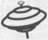

À L’ORIGINE
Traduction de l’anglais (Canada)
CÉCILE DUMAS

KTM éditions
Titre original :
Love Ruins Everything
Éditeur original :
Press Gang Publishers, Vancouver
Copyright :
© Karen X. Tulchinsky, 1998
Traduction française, Copyright :
© KTM éditions, 2004
20, rue Saint-Nicolas -75012 Paris
ISBN 2-913066-19-4
Aux 30 millions de personnes séropositives
à travers le monde.
I
Quand la vie vous rattrape,
alors que vous aviez d’autres projets
1
Les derniers rayons du soleil couchant se réfléchissent sur la marquise du Castro Theater et miroitent sur notre table. Nous sommes dans notre restaurant thaï favori à San Francisco. Nous y venons tous les mardis soirs pour leur plat du jour, le curry de fruits de mer. La lumière m’éblouit et m’oblige à plisser les yeux pour regarder mon amoureuse. Sapphire sourit, approche la main de son verre de vin blanc.
— Je crois qu’on devrait cesser d’être monogames, annonce-t-elle en buvant une gorgée.
— Quoi ?
Un morceau de crevette au curry se loge quelque part dans ma gorge. Sapphire replace son verre sur la table avant de prendre une grande respiration.
— Je cherche à te parler de ça depuis ce matin.
J’avale péniblement, en essayant de faire descendre la crevette.
— Vraiment ?
— Ça me trotte dans la tête.
— Depuis quand ?
Elle prend sa fourchette et joue avec un morceau d’aubergine sautée.
— Depuis hier.
— Hier ? Que s’est-il passé hier ? Je croyais que tu étais allée faire des courses ?
— C’est exact.
— Chez Safeway.
— C’est exact.
— Et après, tu es rentrée à la maison.
— Oui, c’est ça.
Elle embroche férocement l’aubergine. À la table voisine, à dix centimètres à peine, un couple d’homos d’une quarantaine d’années discute d’un nouveau logiciel qui va révolutionner le secteur bancaire. Ils ont tous les deux les cheveux courts, poivre et sel, clairsemés sur le dessus. L’un a une moustache, l’autre un bouc. Leurs pulls ont une couleur verte assortie.
— Et pendant que tu faisais les courses, tu as décidé qu’on ne devait plus rester monogames ?
— Oui. Non. En fait... pas pendant que je faisais les courses. Je ne sais pas vraiment quand. Ça m’est venu, c’est tout.
Je croise les bras sur ma poitrine et lâche, en haussant la voix :
— Qui est-cette fille ?
Sapphire lance un regard nerveux du côté des pédés en pull-over. Il y a comme une pause dans leur conversation à bâtons rompus. On entend le bruit des fourchettes dans leurs assiettes.
— Nomi, baisse le ton.
Je crie de plus belle.
— Pourquoi ? Je n’ai rien à cacher !
Sapphire déteste foncièrement les « scènes en public ». Un reliquat de l’éducation wasp qu’elle a reçue et qui est encore profondément ancrée en elle.
— Nomi, je ne vais pas discuter de ça si tu continues de crier.
Le téléphone portable de quelqu’un se met à sonner. Je hurle :
— Qui est-ce qui crie ? !
Les pédés lèvent un sourcil dans notre direction.
— Allô ? dit, derrière moi, un homme au téléphone.
Sapphire jette sa serviette sur la table et se lève.
— Je m’en vais, murmure-t-elle en lançant un regard furtif dans la salle.
Tout le monde alentour nous écoute, espérant sans doute qu’elle me fiche son verre de vin à la figure ou qu’elle me gifle. Histoire de pouvoir le raconter aux copains.
— Sapphire, dis-je d’une voix plaintive. Allez, assieds-toi. Tu n’as pas encore fini ton assiette.
Elle secoue la tête, puis, contenant sa rage, traverse le restaurant sans un mot avant de passer la porte. Je fais signe au serveur. La musique d’ambiance est une version instrumentale de Have You Ever Loved a Woman.
Je règle la note et m’élance au pas de course jusqu’à States Street et l’appartement que je partage avec Sapphire depuis deux ans et demi. Jody, son chat tigré gris, gambade gaiement à l’intérieur en compagnie des jumeaux, Martina et Whitney, deux chatons tout noirs qu’elle a récemment ramenés d’un refuge.
Sapphire regarde Les Simpsons, couchée sur le canapé, dans un tee-shirt Gay Freedom Day 1993 qui lui descend jusqu’aux genoux. Je me poste à côté du téléviseur pour l’observer.
— Tu vas t’asseoir, oui ou non ?
Elle est toujours en colère. Une pensée me traverse l’esprit : c’est moi, il me semble, qui devrais être en colère !
— Et toi, tu vas me parler ? dis-je, d’un ton glacial. Personne ne peut nous entendre maintenant.
Cela m’énerve qu’elle soit si coincée. Dans ma famille, on crie et on se fait des scènes en public à longueur de temps. C’est aussi naturel que de respirer.
Sapphire éteint la télé et se redresse. Je m’assois en face d’elle, les jambes croisées. Elle me prend les mains et me regarde intensément, avec un air doux rempli d’amour, celui-là même qui m’avait fait craquer au tout début.
— Je ne veux pas te contrarier, Nomi. Je t’aime. C’est juste que... Je suis toujours passée d’une relation à l’autre, sans pause entre chacune d’elle. Je n’ai jamais été réellement célibataire et je ne sais pas comment on s’y prend pour rencontrer quelqu’un.
— C’est pas aussi génial qu’on veut bien le croire.
Elle pousse un soupir.
— Peut-être, mais j’ai besoin de le découvrir par moi-même. Je ne veux pas rompre avec toi. Je veux juste m’essayer à la drague. Tu comprends ça ?
— Bien sûr que je comprends. Tu en as marre de moi et tu cherches quelqu’un d’autre, dis-je en prenant une expression boudeuse.
Je me détourne d’elle. Elle se penche et cherche mes yeux.
— Nomi, je n’en ai pas marre de toi.
Je lui fais face.
— Si tu me laisses tomber pour quelqu’un d’autre, je te tue.
Elle m’effleure la joue avec tendresse.
— Je ne suis pas en train de te laisser tomber.
— Je te tirerai dessus. Je me fous de passer le reste de ma vie en prison.
— Viens ici.
Ses mains m’attirent contre elle pour me faire taire d’un baiser.
Le lendemain après-midi est chaud et ensoleillé, comme cela arrive souvent, début novembre. La brume matinale s’est levée, dévoilant un ciel d’un bleu limpide. Je descends Castro Street avec un sac rempli de courses, un sachet de croissants et des fleurs pour Sapphire.
Un grand gaillard musclé au crâne rasé, vêtu d’un pantalon large et d’une casquette de base-ball, se penche pour embrasser goulûment ma copine. Tout ce que je porte s’échappe sur le trottoir sale. Je suis plantée là, les yeux rivés sur le couple. Et tous les gens présents ont les yeux rivés sur moi.
— Eh, Madame, crie un adolescent, vous avez laissé tomber vos trucs !
Les amoureux se détachent. Le regard de Sapphire est rêveur. On dirait qu’elle a aimé se faire tripoter par ce Rambo. Je reste clouée sur place. Le type se décale un peu et les yeux de Sapphire croisent les miens. Elle se fige, comme une gamine surprise en train de fumer une cigarette ou de voler des bonbons. Je lui lance un regard de pur mépris. Elle se précipite vers moi. Tous mes muscles frémissent et je me détourne, en laissant mes affaires par terre.
— Nomi, crie-t-elle, arrête-toi !
Je remonte la rue à grands pas.
— Nomi ! Attends ! Il faut qu’on parle.
Je crie par-dessus mon épaule :
— Pour dire quoi ?
J’ai atteint le sommet de la côte et commence à souffler bruyamment.
— Nomi. Et tes affaires ? Tu ne peux pas les laisser là !
— Rien à foutre !
Soudain je ne sens plus sa présence dans mon dos. Elle s’est arrêtée pour ramasser les courses. Je passe devant notre rue et continue à marcher. À marcher encore.
Plus tard dans la soirée, j’appelle ma mère à Toronto.
— Je le savais, dit-elle.
Sapphire est sortie. Quand j’ai fini par rentrer, nous nous sommes disputées. Elle est partie vite, en claquant la porte derrière elle. Je suis en train de siroter un verre de porto de quinze ans d’âge. Un cadeau de son père, qu’elle n’avait jamais ouvert.
— Quoi ? Qu’est-ce que tu savais, maman ?
— Je savais que ce n’était pas une vraie lesbienne.
Sa voix est pleine d’autosatisfaction, comme si elle venait de trouver la bonne réponse à La Roue de la fortune.
— Maman. Qu’est-ce que tu veux dire par « vraie lesbienne » ?
— Je l’ai toujours trouvée ultraféminine.
— Oui, elle l’était. Elle l’est. Et alors ?
— Et alors ? Alors elle aime probablement les hommes.
— Maman, ça ne veut rien dire. Être féminine n’a rien à voir avec ça. Et de toute façon, depuis quand es-tu une experte en lesbiennes ?
— J’ai appris tout ce que je sais de toi et un peu aussi grâce à Phil Donahue. Tu as vu son émission sur les lesbiennes tueuses en série ?
— Maman, ne commence pas. S’il te plaît. Est-ce que tu m’écoutes ? Sapphire et moi, on se sépare. C’est comme un divorce, maman. Je suis ravagée. Je veux de la compassion. Je ne veux pas entendre parler de Phil Donahue.
Un silence. J’imagine ma mère qui hoche la tête. Je jette un coup d’œil à la photo prise en décembre dernier, lors du deuxième anniversaire de notre rencontre. Elle est dans un cadre posé sur le meuble audio-vidéo de Sapphire. Nous avons l’air heureuses et amoureuses. Je la couche face contre terre. Avec hargne. Le verre, malheureusement, ne se casse pas.
— Tu as raison, Nomi. À quoi est-ce que je pensais ? Je suis désolée. Tu me pardonnes ? Comment vas-tu, ma chérie ? Tu as besoin de quelque chose ? Pourquoi ne rentres-tu pas ? Tu pourrais rester chez moi. Ce serait bien. On se ferait des soirées pyjamas.
— Maman, je suis trop vieille pour les soirées pyjamas et toi aussi.
— On n’est jamais trop vieux pour se marrer un peu. Souviens-toi de ça, Mamelah. C’est très important.
— Je reste ici.
— Pourquoi rester ? Pourquoi ne reviens-tu pas à la maison ?
— C’est chez moi ici, maman. J’habite ici maintenant.
— OK. Tu ne pourras pas me reprocher de ne pas avoir essayé. Alors ? Dis-moi ? Ça va, côté finances ? Je vais t’envoyer un petit quelque chose pour t’aider.
Ma mère, millionnaire s’il en est. Nous n’étions pas vraiment la famille Rockefeller du vivant de mon père. Maintenant, elle s’en sort grâce à une petite assurance souscrite par son mari et un travail à mi-temps dans le magasin de souvenirs d’une synagogue.
— Depuis quand tu roules sur l’or ? Quelqu’un est mort ?
— Personne n’est mort. C’est Murray.
— Quoi ? Il te donne de l’argent ?
Murray Feinstein est l’ami de ma mère. Ils se sont rencontrés, il y a un an au cimetière, après la cérémonie d’inauguration de la matséva de mon père. Dans la tradition juive, une pierre est placée au-dessus de la tombe d’une personne qu’on enterre. Un an après les funérailles, la famille se rassemble au cimetière pour dévoiler la stèle et se souvenir du défunt. Murray était au même endroit ce jour-là, à se recueillir sur la tombe de sa femme.
— Attention à ce que tu dis, petite. Je suis toujours ta mère.
— Qu’est-ce que j’ai dit ?
— Il m’emmène trois ou quatre fois par semaine au restaurant, que ce soit chinois, italien, tout ce que tu voudras. Alors en ce moment, je dépense moins pour les courses.
— Oh.
Le lendemain matin, quand Sapphire part travailler, je fais semblant de dormir. Nos horaires sont complètement différents. Je suis barmaid le soir, du mardi au dimanche, au Patty’s place, un petit pub à Bernai Heights non loin de là. Sapphire travaille la journée, du lundi au vendredi, chez Good Vibrations, le sex-shop du quartier de la Mission, ce qui en soi prête vraiment à rire. Si ses clients savaient à quel point elle est coincée et refoulée, elle ne vendrait pas le moindre vibromasseur. Je reste assise pendant des heures à la table de la cuisine avec une tasse de café froid, en état de choc. Sapphire a vécu ici avec sa dernière amante. Cet appartement lui appartient. Il n’y a qu’une photo de nous deux, toutes les autres montrent la famille de Sapphire. Ses grands-parents, Nanna et Poppa, ses parents, ses deux frères blonds et sa sœur toute menue. Ils affichent un grand sourire. Mais personne ne se touche. Les meubles, la vaisselle, la chaîne, la télé, les livres, les serviettes, les bibelots sont à Sapphire. J’ai juste mes fringues, deux ou trois livres, un peigne, une brosse à dents, du gel, mon casque. Une fois, nous avons acheté ensemble un presse-ail, car le sien était rouillé. Et le lit. Nous avons investi à deux dans le nouveau lit. Tout le reste est à elle.
Lorsque je finis par vérifier l’heure, la journée s’est écoulée. J’ai juste le temps de me préparer pour aller bosser. Sapphire sera en train de dormir quand je rentrerai dans la nuit. J’ai l’impression que la terre penche et que je glisse doucement vers un grand trou béant. Je suis désemparée.
Ce soir, Sapphire veut dîner avec moi. Je ne l’ai pas vue du week-end. Elle était sortie quand je me trouvais à la maison. Ou bien elle dormait. Quand elle était là, c’est moi qui étais au travail. Elle arrive nonchalante, rayonnante, comme il sied à une personne amoureuse depuis peu.
— Salut, Nomi, dit-elle, l’air de rien, en passant devant moi pour regagner la chambre.
Elle a une heure de retard. Je fulmine à la table de la cuisine. Je parie qu’elle a casé une visite à son Rambo. Je bouillonne de colère, mais j’essaie de me contenir.
— Je vais me prendre une douche vite fait, dit-elle de la chambre, d’une petite voix flûtée, et puis après on sort.
J’entre dans la pièce d’un pas résolu, les poings serrés.
— Non, Sapphire. On ne sort pas.
Elle pivote.
— Quoi ?
— Tu as une heure de retard.
— Ah bon ?
Elle regarde une montre qui n’existe pas à son poignet.
— Écoute, je ne suis pas conne à ce point, dis-je (même si je n’en suis pas si sûre).
— Nomi... dit-elle en faisant un pas vers moi.
— Tu étais avec lui, n’est-ce pas ?
Elle soupire.
— C’est bien ce que je pensais.
Je me dirige vers l’armoire, ouvre la porte d’un coup sec, cherche dans une pile de linge mon sac à dos en toile noir. Je jette des vêtements sales derrière moi d’un geste rageur.
— Nomi, qu’est-ce que tu fais ?
— Merde.
Frustrée, je saisis une raquette de tennis et la fracasse sur le parquet. J’envoie valser ce qui me passe par les mains : un vieux flacon de crème solaire, une balle de base-ball, des lunettes cassées, une basket, une rallonge blanche...
— Le voilà.
Je tire mon sac, y fourre pêle-mêle quelques culottes, des jeans, deux ou trois tee-shirts, des chaussettes, je me dirige vers la salle de bains en bousculant Sapphire au passage. Je fourre dans la poche de devant ma brosse à dents, notre dentifrice, mon peigne, mon eau de Cologne et mon savon pour le visage.
— Nomi, qu’est-ce que tu fabriques ?
— Sapphire, c’est à toi qu’il faudrait poser cette question !
Je mets le sac sur mon épaule, ouvre la porte d’entrée d’un geste brusque, au point de la faire cogner contre le mur, et dévale les escaliers. Dehors, le brouillard a noyé le soleil, jetant un voile sur la terre.
Je fais rugir ma Honda Rebel rouge dans States Street. Sur Castro, je m’arrête au bord de la route. Où aller ? La semaine entière a été douloureuse. Chaque instant passé avec Sapphire dans l’appartement est un coup de poignard. Dans la 18’ rue, je fais soudain demi-tour et stationne près d’une cabine téléphonique devant la librairie A Différent Light, d’où j’appelle Betty, ma meilleure amie.
— Ramène-toi ici, ma fille, ordonne-t-elle.
Betty habite seule dans un F2 à Bernai Heights, non loin de l’endroit où je travaille.
— Le canapé du salon est à toi, mon chou, dit-elle, aussi longtemps que tu le voudras. Tu m’entends ?
— Tu me sauves la vie, Betty.
— Tu me remercieras plus tard. Ramène donc tes fesses de blanche jusqu’ici.
Je saute sur ma moto et remonte Castro Street. Le vent frais souffle sur mon visage en feu. Je suis tellement en colère que mes spasmes de rage pourraient déclencher un tremblement de terre.
— C’est encore Sapphire.
Betty passe sa tête fraîchement lavée par la porte de la chambre, le téléphone en main.
— Qu’est-ce que je dois lui dire ?
— Dis lui d’aller se faire foutre.
Betty parle dans le téléphone.
— Tu as entendu ? Mmm. OK. Ouais. Je lui dirai.
Elle traverse le salon jusqu’à la cuisine, en revient avec deux canettes de Bud Light et m’en tend une. Je fais une grimace, mais j’accepte la bière et en avale une grande gorgée.
— Comment tu peux boire un truc pareil ? C’est dégueulasse.
— Ça n’a pas l’air de te gêner.
Betty s’assoit à côté de moi sur le canapé. Elle passe machinalement la main derrière son oreille, là où il y a longtemps eu des dreadlocks, puis s’affaisse contre des coussins géants multicolores. Betty portait ses dreadlocks depuis 1985. Elle les a coupées hier et s’est complètement rasé la tête. Depuis, elle se plaint d’avoir tout le temps froid.
— Tu veux savoir ce qu’elle a dit ?
Betty remonte la couette sur ses jambes. Elle allume son écran de 75 centimètres avec la télécommande. Le son stéréo jaillit des enceintes. Elle zappe et s’arrête sur Les Simpsons.
Je décide d’être insupportable.
— Je déteste cette série.
Elle me regarde comme si j’avais perdu l’esprit.
— Tu adores cette série.
Je hausse les épaules.
— Je la déteste. Alors ? Qu’est-ce qu’elle a dit ?
Elle hésite, scrute mon visage.
— Quoi ? dis-je, déconcertée par cette contemplation excessive.
— Tu ne vas pas aimer.
— Et alors ? C’est pas nouveau. Dis-moi ce qu’elle t’a dit.
— Elle a dit qu’elle ne voulait pas te faire de mal. Elle ne voulait pas... tu es sûre que tu veux savoir ?
Je frappe l’accoudoir du poing.
— Je viens de te dire que oui. Dis-moi.
— OK. Elle a dit qu’elle ne voulait pas tomber amoureuse de Richard. Mais c’est arrivé.
Elle lâche les mots comme si elle était pressée de s’en débarrasser. C’en est trop pour moi. Je saute du canapé. Un flot de bière jaillit de ma canette et vient éclabousser Betty.
— Richard ? Richard ! C’est arrivé ? Super ! C’est super ! C’est arrivé ! Putain, comme c’est original. Putain, c’est pas original ça, Betty ?
— Pas particulièrement.
Elle laisse tomber par terre la couette imbibée de bière, lève ses fesses, plonge la main dans une de ses poches pour en retirer un bandana bleu avec lequel elle éponge la bière sur son visage et sa poitrine. Son sweat noir finit d’absorber le reste.
— Je n’arrive pas à y croire.
Je m’effondre dans le canapé, pose brutalement ma canette sur la table basse, me prends le visage à deux mains avant de me mettre à pleurer. Betty se penche sur moi, me frotte le dos tout en continuant de boire sa bière.
— Oh zut !
Les larmes roulent sur mes joues.
— Ma pauvre chérie.
— Oh merde ! Il ne faut pas. Il ne faut pas que je pleure.
— C’est pas grave, Nomi. Je ne le dirai à personne.
— Non, ce n’est pas ça. Je dois bosser ce soir.
— Oh !
Je relève la tête.
— Mes yeux sont déjà tout rouges et gonflés, pas vrai ?
Elle se penche en arrière pour bien me regarder.
— Ben... c’est pas si terrible.
— Tu mens.
Elle hausse les épaules.
— Merde. Il faut que j’arrête de pleurer, dis-je, ce qui provoque un nouveau torrent.
Betty émet des sons compatissants, me caresse encore le dos.
— Pourquoi tu n’appelles pas pour dire que tu es malade ?
— Patty va me tuer.
— Mais non. Elle comprendra. En fait, je crois que tu devrais te prendre une semaine. Tu ne peux pas travailler dans cet état.
Betty attrape le téléphone, me passe le combiné.
— Vas-y. Appelle-la.
— Tu crois ?
Betty hoche la tête. Je compose le numéro. Le chien dans l’appartement d’à côté se met à aboyer.
Je tourne et me retourne toute la nuit sur le canapé de Betty. C’est un vieux fauteuil à deux places qui ne se convertit pas en lit. Même avec mon mètre cinquante-cinq, je suis trop longue. Si je suis sur le dos, les jambes allongées, je dois les percher sur l’accoudoir du bout. Si je me mets en position fœtale, je me cogne les genoux contre le dossier. La voisine est debout avant le lever du soleil, à ranger la vaisselle dans les placards. Un coussin sur ma tête ne parvient pas à étouffer les cliquetis. Betty surgit plus tard dans la matinée, avec un caleçon long sous son jean et un sweat-shirt. Le soleil radieux se déverse pourtant à flot dans le salon.
— Je vais boire un cappuccino au Café Blue, dit-elle. Tu viens ?
Je tire la couette sur ma tête. Elle sent la bière éventée.
— Non ! Je n’irai plus jamais là-bas. Sapphire et moi, on y allait tous les dimanches matins.
— Bon... mais on est samedi.
Betty s’installe à une table dans le patio tandis que je rentre chercher les boissons. Me voilà bientôt avec deux cappuccinos en équilibre dans une main, une énorme part de gâteau au chocolat dans l’autre et un numéro récent de Bay Times sous le bras, à me frayer un chemin dans ce café bondé. A quelques pas de notre table, un homme particulièrement grand se met sur mon passage. Je relève la tête pour me retrouver nez à nez avec Sapphire. Le grand gaillard, c’est lui. Rambo. L’espace d’un instant, j’ai envie de balancer le café brûlant au visage de Sapphire. Elle devine mes pensées. Ses yeux écarquillés lorgnent sur les tasses avant de se poser sur moi.
— Qu’est-ce que tu dirais si j’agissais sans réfléchir ?
— Nomi, s’il-te plaît, est-ce qu’on pourrait parler ? dit-elle en me tendant les bras.
— De quoi ?
Je lui fourre tout ce que je tiens dans les mains. Je pars sans me retourner. J’entends un bruit de vaisselle qui se fracasse au sol. Betty m’emboîte le pas.
— D’accord. Le café, ce n’était pas une bonne idée. Mais tu sais ce que je ferais, si j’étais toi ?
Betty est assise par terre dans le salon, elle tente de déchiffrer le mode d’emploi de son nouveau lecteur CD. Elle s’efforce de me convaincre de sortir de mon trou. Je passe mon temps à ressasser dans l’appartement. Je n’ai pas besoin d’être extralucide pour comprendre que je commence à lui taper sur les nerfs.
— Quoi ?
Je suis en train de répartir des trombones argentés d’un côté de la table basse et des trombones dorés de l’autre. J’ai entrepris de ranger les tiroirs bordéliques de Betty. Remettre quelque chose en ordre m’apaise, même si ce n’est pas de ma vie qu’il s’agit.
— Sors. Baise. Éclate-toi. Crois-moi, rien ne vaut le cul pour soigner une rupture.
Elle agite le fascicule du lecteur CD dans ma direction.
— C’est quoi, ça ?
Je lui montre un petit objet en métal qui, par le passé, a dû être un porte-clés en plastique, couvert d’un chewing-gum fondu. Dessous, on distingue un pâle dessin du Golden Gâte Bridge. Betty se précipite vers moi, m’arrache la chaîne pour la jeter à la poubelle. Je décide de sortir sans plus tarder, pour au moins contenter mon amie.
Betty a un rendez-vous galant dans la soirée. J’ai loué Éclair de lune, le seul film que je me sens capable de regarder. J’ouvre une canette de Bud Light, tire la couette sur mes jambes et m’installe confortablement. J’en suis à ma deuxième bière quand ma scène préférée commence. New York, tard un soir, Loretta Casterini et Ronnie Cammerari se tiennent au pied de l’appartement de Ronnie. C’est une froide soirée d’hiver, une neige légère tombe sur les amoureux.
— L’amour n’est pas parfait, déclare Ronnie. L’amour brise les cœurs. L’amour détruit tout.
Je connais les dialogues sur le bout des doigts. Je parle en même temps que lui en imitant son accent new-yorkais.
— Nous ne sommes pas là pour faire en sorte que les choses soient parfaites. Les flocons de neige sont parfaits. Les étoiles sont parfaites. Pas nous. Pas nous. Nous sommes là pour nous détruire, briser des cœurs, nous tromper en amour et puis... mourir.
Une larme roule sur ma joue. Je ne pensais pas que notre relation était parfaite, mais je croyais que nous tenions quelque chose de bien. Sapphire me manque, et pourtant je la hais.
Je somnole pendant que le générique de fin défile sur la chanson de Dean Martin :
« Quand la lune attire ton regard, que tu danses dans la rue un nuage à tes pieds,
Quand tu marches dans un rêve, mais tu sais que tu ne rêves pas,
Signora, ‘scuza me, là-bas, dans les vieilles rues de Naples, c’est l’amour. »
Je rêve que je suis dans un vieux lit à baldaquin avec autour de moi, des femmes à peine vêtues, dont le seul but est de me rendre heureuse. L’une d’elles m’embrasse. Une autre me masse les pieds. Quelqu’un me sert une boisson. Quelqu’un d’autre paie mon loyer. C’est un rêve délicieux, une production qui se monte à plusieurs millions de dollars avec une distribution qui compte des milliers de figurantes, toutes séduisantes.
Sapphire, habillée d’un négligé noir, entre et vient se glisser dans le lit. Elle dépose de doux baisers sur mon corps. C’est comme au bon vieux temps. Nous nous embrassons. Elle me caresse partout de ses doigts soyeux. Une sensation de paix m’envahit, que je croyais ne plus jamais pouvoir ressentir.
Je me réveille à un bruit de clés dans la serrure. Des rires. Betty et une femme que je ne reconnais pas se faufilent dans l’appartement, en essayant vainement d’être discrètes, étant donné leur état d’ébriété. Je choisis de les prévenir.
— C’est bon, je ne dors pas.
Il y a un silence, puis :
— Salut Nomi. Désolée de t’avoir réveillée.
— Je ne dormais pas.
Je remonte la couette par-dessus ma tête pendant qu’elles se dirigent vers la chambre de Betty. La cloison qui nous sépare est mince comme du papier. J’essaie de ne pas écouter leurs ébats amoureux. La tête enfouie sous les couvertures, je m’imagine à l’intérieur d’une grotte. Il fait noir comme dans un four. J’ai le cœur en miettes, mais il continue de battre dans ma poitrine. Je me résigne à pleurer sans bruit. Comment ma vie a-t-elle pu s’écrouler si vite ? Le sommeil éloigne bientôt les sons étouffés de Betty et son amie.
Le lendemain matin, je décide de suivre le conseil de Betty. Je sollicite son aide pour retourner dans le monde. Betty connaît des tas de gens. Elle m’arrange le coup avec Alison, la jeune sœur d’une femme avec qui elle est sortie l’année dernière.
— Oh, est-ce que je t’ai dit qu’elle venait de sortir du placard ? me demande Betty alors que je suis sur le point de partir.
— Quoi ?
— Elle est un peu timide, ajoute-t-elle.
Alison et moi allons au Castro Theater pour voir Forrest Gump, que j’avais raté à sa sortie. Au milieu du film, je glisse nonchalamment ma main dans celle d’Alison. Qu’il est bon de pouvoir toucher une femme à nouveau ! Pourtant, je ne peux m’empêcher de la comparer avec la main de Sapphire. Celle-là est plus fine, et elle ne m’agrippe pas avec la même force. À la fin du film, j’ai le visage baigné de larmes. Je prétends être émue par Forrest mais en réalité, je pleure sur mon sort. Et sur Sapphire. Je tente un sourire et suggère un verre au Café, un bar sur deux niveaux qui donne sur Market.
À la porte, on demande à Alison ses papiers d’identité. Je me sens soudain vieille. Ma vie me paraît ridicule. Pourquoi ai-je écouté Betty ? Je n’ai pas envie de ces rendez-vous amoureux. J’ai envie de Sapphire.
— Alison, peut-être qu’on ferait mieux de ...
Le videur lui rend ses papiers et hoche la tête. Elle sourit.
— Tu disais... ?
— Rien.
Nous nous dirigeons vers une table vide près de la fenêtre. Les émetteurs radio de Twin Peaks s’élèvent au-dessus de Castro.
Alison et moi n’avons pas grand-chose à nous dire. Je suis nouvelle à ce jeu-là et elle est nouvelle tout court. Je m’échine à alimenter la conversation. Le film, le temps, nos boulots, le milieu. Après deux verres, je commence enfin à me sentir bien. Betty a peut-être raison : une histoire me remonterait le moral. Je regarde Alison. Elle est vraiment mignonne. Je lui souris. Elle me sourit. Le DJ met Mighty Good Man par les Salt’n’ Pepa et En Vogue. Je lui demande si elle veut danser. Elle sourit à nouveau. Je la conduis sur la piste de danse. Elle se déhanche langoureusement. On devine ses seins ronds et pleins sous son décolleté en Lycra. Je la trouve de plus en plus mignonne. J’enroule un bras autour de sa taille. Nous dansons serrées l’une contre l’autre, mais ce n’est pas pareil qu’avec Sapphire. Elle est plus fine, à peine plus grande et elle bouge moins vite. Elle me regarde dans les yeux, se lèche les lèvres. À mon avis, elle souhaite que je l’embrasse. Je me penche vers elle, en approchant lentement ma bouche de la sienne. Elle presse violemment ses lèvres sur les miennes. Sa langue remue à l’intérieur de ma bouche, ses seins se frottent contre les miens, ses doigts se perdent dans mes cheveux. Elle a un goût de rhum-coca. Le baiser se prolonge jusqu’à la fin de la chanson. Elle arbore un large sourire. Je me penche à son oreille :
— Peut-être qu’on pourrait aller dans un endroit... plus confortable ?
— Mmmmm, fait-elle en guise de réponse.
Nous partons sur ma Honda. Quelques instants plus tard, je me gare sur le trottoir devant le petit studio d’Alison, situé au rez-de-chaussée. Ses fenêtres à barreaux sont couvertes de crasse. Les voitures passent en trombe, les gens hurlent, les bus rugissent, la musique braille, les SDF font la manche, les chiens aboient. L’appartement pue la pisse de chat. On entend des bruits de pas au-dessus de nos têtes. Le sol colle sous les semelles. 400 assiettes encombrent l’évier.
— Oh merde ! jure Alison, en se précipitant vers le lit et en passant la main sur les draps. Pas encore !
— Quoi ?
— Ma chatte est névrosée. Chaque fois que je sors, elle pisse sur le lit.
— Oh ! Je ris même si ce n’est pas vraiment drôle. Viens ici.
Elle ne bouge pas.
— Quoi ?
— Heu... fait-elle en baissant la tête, c’est juste que... heu...
— Quoi ?
Elle me regarde avec des yeux ardents.
— Embrasse-moi.
Je m’exécute. Nous nous embrassons longuement en nous caressant à travers nos vêtements. Mes tétons se durcissent. Le désir monte. Il transperce la forteresse de pierre qui a cerné mon cœur et emprisonné mon corps le jour où j’ai vu Sapphire dans les bras de ce gars sur Castro. J’enlève doucement sa veste de velours et la jette dans un coin. Je défais le premier bouton de son pull, puis le deuxième, et le troisième. Son corps se raidit légèrement. Sa main agrippe mon poignet.
— Quoi ? Qu’est-ce qui ne va pas ?
Elle baisse la tête à nouveau.
— Alison ?
— Écoute. Tu devrais peut-être t’en aller.
— M’en aller ? Mais je croyais que tu avais dit...
— Je sais, mais je ne suis pas encore prête.
— Pas encore prête ?
— Tu sais bien.
— Oh, fais-je en laissant tomber les mains. Ça va ?
Je cherche ses yeux, mais ils sont cachés par sa longue chevelure. Peut-être pleure-t-elle.
— Bon, OK. Je m’en vais alors. Heu... si c’est ce que tu veux. C’est ce que tu veux, hein ? Tu veux que je m’en aille ?
J’ai envie d’écarter ses cheveux pour lire dans ses yeux, mais j’ai peur de la toucher. Elle hoche la tête.
— Bon... ah... je ... Je t’appelle, OK ?
J’ouvre la porte doucement et me glisse dehors.
— Ne sois pas ridicule, maman. Bien sûr que je connais le safe sex.
Je bois un café fumant, adossée à un grand coussin sur le canapé de Betty.
— D’accord. Je demandais juste. Au cas où, j’ai pris quelques prospectus chez mon docteur.
— N’envoie pas de prospectus. Je sais ce qu’ils disent.
Betty se promène dans la pièce, torse nu. Elle s’habitue à ne plus avoir de cheveux et elle a cessé de s’habiller comme dans le Grand Nord. Elle passe devant le canapé en se frottant les yeux et se dirige vers la cuisine. Son tee-shirt bleu marine lui arrive aux genoux. Le soleil inonde le salon.
— Ce n’est pas un problème, Nomi. J’ai de quoi acheter un timbre à 52 cents.
— S’il te plaît, Maman. Garde les prospectus, d’accord ?
J’entends Betty se servir une tasse de café.
— Pardonne-moi. Une mère se fait toujours du souci.
— Ne t’inquiète pas. Je sais tout ça. De toute façon, les lesbiennes ne sont pas vraiment une population à risque.
Betty arrive avec son café et s’écroule sur le canapé à mes côtés.
— Mamelah, qu’est-ce que tu veux dire par là ?
— Maman, c’est pas facile à expliquer.
Betty lève un sourcil et me gratifie d’un large sourire.
— Je t’écoute.
— Le virus du sida...heu... est plus présent dans le sperme et le sang que... heu... n’importe où ailleurs.
Un silence. Betty approche son oreille du combiné pour écouter.
— Maman ?
— Je t’écoute. Continue.
J’ai l’impression d’être dans un film de Woody Allen. Ça ne peut pas être vrai, c’est trop absurde. J’essaie de repérer des caméras cachées dans le salon de Betty. Comment en suis-je arrivée là ? À expliquer la transmission du VIH à ma mère, sur le canapé de ma meilleure amie ? Si j’arrive à gagner du temps, peut-être que Woody viendra à mon secours et criera « Coupez ! ». Je jette un regard désespéré à Betty.
2
Une semaine plus tard, B.J., la copine du moment de Betty, me présente son amie Mimi, une bibliothécaire plus âgée (lue moi, récemment divorcée elle aussi. Cette dernière habite toujours avec son ex. Je ne sais pas comment elle fait. Penser à Sapphire m’est déjà insupportable, je n’imagine même pas ce que serait de la revoir. Je propose à Mimi de sortir un soir.
Son adresse me mène à une maison victorienne vert pastel, avec de grandes fenêtres en saillie, des moulures ornementales autour de piliers blancs. Je grimpe l’escalier en bois. Personne ne répond au coup de sonnette. On entend brailler la chanson du générique de Ellen, d’une fenêtre ouverte au deuxième étage. Je sonne encore une fois. Je frappe. Je sonne jusqu’à ce que j’entende des bruits de pas, passe nerveusement la main dans mes cheveux courts. La porte s’ouvre. Mimi est vêtue d’une robe de chambre en soie bordeaux, elle a les jambes nues. Ses longs cheveux bruns sont tressés dans une natte. Ses yeux marron sont très doux.
Je lui souris.
— Salut.
— Oh, je suppose que tu n’as pas eu mon message.
— Ton message ?
— J’ai appelé pour annuler. Je suis fatiguée. J’ai eu une dure journée.
— Ah !
— Bon...
— Heu...bon, ça te dirait qu’on remette ça à plus tard ? On pourrait prévoir une autre sortie...
— Bien sûr. Oh... et puis zut ! Puisque tu es là, on pourrait aller au bar du coin pour un café.
— OK.
— Mais attends. Je dois m’habiller.
Elle ferme la porte, me laissant sur le perron. Je m’appuie contre le mur et regarde les gens passer. Vingt minutes plus tard, la porte s’ouvre. Mimi a revêtu un jean serré noir, un pull à col en V rouge, un blouson de cuir noir. Ses cheveux lui tombent au milieu du dos. Je lui donne le bras et nous descendons la rue sans nous presser.
Nous discutons devant deux cafés crème. Sa vie semble encore plus folle que la mienne. Elle vit depuis quatre ans avec une butch plus âgée qui ne se prénomme plus Teresa Maria, mais Nat. Elles n’ont pas fait l’amour depuis plus de trois ans.
— Mais les six premiers mois ont été super, pointe Mimi.
Pour elle, Nat est toujours sa « compagne » même si elles sont séparées depuis neuf mois, quand Nat lui a annoncé qu’elle était transsexuelle et qu’elle avait commencé un programme pour changer de sexe à l’université de Californie à San Francisco. Depuis six mois, Mimi sort avec une femme bisexuelle qui s’appelle Wanda, et qui ne fait pas plus l’amour avec elle.
— Je vais chez elle et nous regardons des cassettes vidéo. Je commence à flirter, et puis elle dit qu’elle est fatiguée, explique Mimi. À chaque fois. Je ne sais plus quoi faire.
Je me sens mal placée pour lui donner des conseils.
— Encore du café ?
Tout se passe si bien que nous prolongeons la soirée à la taqueiria de la 18e rue avec des burritos au steak et aux haricots. Lorsqu’elle se décide à rentrer, je propose de la raccompagner. Sur le perron de la maison, j’attends qu’elle ouvre la porte. Elle sourit, approche la main et écarte une mèche devant mes yeux.
— Tu veux entrer un moment ?
— Et Nat ?
— Partie rendre visite à sa mère à Sacramento. Elle va lui dire ce soir.
— Lui dire quoi ?
— Qu’elle va se faire opérer pour changer de sexe.
Elle me prend la main. Sa main à elle est douce et chaude. Je la serre doucement. Elle me conduit en haut d’un escalier dans un vaste appartement avec 2,50 m de hauteur sous plafond. Dans le salon, un lustre de cristal rococo est suspendu à un plafond décoré de rosaces en plâtre. Une grande cheminée au manteau baroque sculpté occupe un mur entier. Le parquet ciré est couvert d’un tapis rouge à fleurs. Des étagères de verre encastrées dans le mur sont remplies de cassettes vidéo, de CD et de livres. Nous buvons de la Corona sur un canapé beige, dont l’assise semble destinée à des gens aux jambes longues. Je m’assois sur le bord pour compenser.
— Alors ? dit Mimi.
— Alors...
Elle sirote sa bière. Je sirote la mienne. La bouteille refroidit mes paumes en sueur.
— Tu m’as dit que ça faisait combien de temps que Sapphire et toi étiez ensemble ?
— Je ne te l’ai pas dit.
Je la fixe dans les yeux. Elle sourit. Je me rapproche.
— Oh !
Elle incline encore sa bière pour boire une gorgée puis la remet droite.
— Trois ans. Bon, ça aurait fait trois ans le mois prochain. J’allais l’emmener à la Russian River pour l’anniversaire de notre rencontre. De toute façon, on s’en fout. Tu as vraiment de beaux yeux.
Sapphire est bien la dernière personne dont j’ai envie de parler à cet instant. Mimi bat des paupières.
— Ah bon ?
— Oui, dis-je avec un grand sourire.
— Merci.
Je prends mon courage à deux mains.
— J’ai envie de t’embrasser.
Mimi a l’air nerveuse, mais hausse les épaules :
— OK.
Je me tourne de côté, pose mes lèvres sur les siennes. Je l’embrasse, mais elle reste de marbre, sans me rendre mon baiser. Je bats en retraite.
— Tu n’en as pas envie ?
— Je croyais que si.
Elle soupire puis se mord la lèvre inférieure.
— Tu es très mignonne, ajoute-t-elle en jouant avec mes cheveux. Mais je me rends compte que je suis encore amoureuse de Nat. Ça me fait bizarre d’embrasser quelqu’un d’autre.
— Tu ne m’avais pas dit que vous aviez rompu ?
— Nous avons rompu.
— Et maintenant c’est... enfin je ne sais pas comment on dit.
— Un transsexuel FTM, female to male[1].
— Alors, comment peux-tu être amoureuse d’elle ?
— Je ne sais pas. Je le suis, c’est tout.
Après cette déclaration, pas facile de trouver ses mots.
— Mimi... en tant qu’amie... je veux dire... si j’étais ton amie, je dirais que tu mérites mieux que ça. En fait, tu n’as pas eu de relations sexuelles avec elle depuis trois ans, et la bisexuelle n’a pas de relations avec toi non plus.
— Ouais ? Et alors ? Où veux-tu en venir ?
Son ton est devenu agressif. J’ai un rire nerveux.
— Heu... eh bien, nulle part je pense, dis-je, plutôt déconcertée. Nulle part.
— Parce que tu ne connais pas la situation.
Je m’empresse de confirmer.
— Non, en effet.
— C’est compliqué.
— Ah oui ?
— Oui, acquiesce-t-elle en croisant les bras sur sa poitrine.
— Ouais. En fait, ouais, je vois ce que tu veux dire.
J’essaie de gagner du temps pour que sa colère se dissipe. Soudain elle baille, de manière ostensible. Elle dépose sa bouteille de bière sur la table basse.
J’attends.
Elle baille encore. Je comprends le message.
— Bon. Je crois qu’il vaudrait mieux que j’y aille.
Je pose ma bière sur la table, à côté de la sienne et me mets debout, en espérant qu’elle m’attrape par le bras, me dise qu’elle est désolée, me supplie de ne pas partir. Elle reste silencieuse pendant que j’enfile ma veste.
— Bon.
Je lui tends la main, qu’elle serre mollement.
— Au revoir.
Je m’en vais.
C’est une froide soirée de novembre à San Francisco. Le temps est doux, voire chaud une grande partie de l’année, mais les nuits sont presque toujours fraîches. C’est un temps à porter un blouson en cuir. Ce dimanche soir, Castro fourmille de gens qui essaient de prolonger le week-end. À un coin de rue devant le Walgreens, un jeune garçon blond distribue des flyers pour une nouvelle boîte. À côté de lui, un homme maigre avec les cheveux sales me demande la pièce. Je prends un flyer, hausse les épaules devant le SDF, me sens coupable sur le champ, fouille mes poches, trouve 25 cents et les mets dans sa tasse en plastique. Je remonte la butte sans me presser. Je ne suis pas encore prête à rentrer chez Betty. Une pluie fine commence à tomber. Je me faufile à l’intérieur du Café pour boire un dernier verre. Pas mal de clients s’y trouvent. Des hommes et des femmes. Des spots blancs, rouges et bleus colorent les murs noirs. La musique est forte. Les gens fument des cigarettes blondes et se hurlent à l’oreille. Les portes du patio sont ouvertes. On entend le bruit de la circulation sur Market Street. Des moteurs de voitures, un bus, une voix d’homme qui hèle un taxi. Des lesbiennes jouent au billard, concentrées sur leur jeu, pendant que d’autres écrivent leur nom à la craie blanche sur le tableau noir en attendant leur tour. Quelques personnes dansent sur I Will Survive de Gloria Gaynor. Le disco est à la mode, cette saison.
Je commande une vodka-Martini et m’assois sur un tabouret au comptoir. Je me plonge dans mes pensées en oubliant les gens autour de moi. J’essaie de trouver un sens à ma vie.
Je suis tombée amoureuse de Sapphire, il y a trois ans. Je n’en avais pas l’intention. Nous nous sommes rencontrées lors de mon voyage à San Francisco. J’habitais alors chez Betty, comme aujourd’hui. J’étais la représentante du Festival de films gays et lesbiens de Toronto. J’étais censée assister au Queer Film Fest de San Francisco et rencontrer des gens de leur comité pour en rapporter des idées à notre groupe. Betty était mon hôte officiel.
C’est Betty qui m’a présentée à Sapphire, ce que je ne manque pas de lui rappeler. Sapphire était dans le comité de San Francisco avec Betty. À l’époque, elle avait une petite amie Marlene, qui y travaillait également. J’avais remarqué Sapphire, mais je savais qu’elle était avec quelqu’un, je me suis donc figuré qu’elle n’était pas pour moi. La soirée dansante du samedi avait lieu au Women’s Building de la 18’ rue, dans Mission. Le comité avait décoré la pièce avec des affiches de grands films classiques, Le Magicien d’Oz, La Mélodie du bonheur, Chantons sous la pluie, l’image que tout le monde connaît de Debbie Reynolds, Gene Kelly et Donald O’Connor, vêtus d’imperméables jaunes et de chapeaux de pluie. Il y avait un bar dans un coin de la pièce et une machine à pop-corn louée pour l’occasion, qui fonctionnait en continu. Le pop-corn et l’odeur de beurre rappelaient l’ambiance des salles obscures. Je me tenais contre le mur du fond, avec Betty, à boire de la bière et à mater les filles.
Sapphire a bondi vers moi, m’a pris la main sans un mot et m’a conduite sur la piste de danse. Elle était un peu éméchée. Elle s’est mise à frotter son corps contre le mien. Je voyais Marlene nous observer de l’autre côté de la pièce. Quand je l’ai signalé à Sapphire, sa réaction a été de rire et de continuer de plus belle. Un peu plus tard, Marlene a disparu. C’est alors que Sapphire s’est vraiment appliquée à me séduire. Je suppose que j’aurais pu, à cet instant, deviner le genre de femme qu’elle était. Si peu sûre d’elle. Passant d’une relation à l’autre sans même prendre la peine de rompre d’abord avec son amie du moment. Mais qui peut ouvrir les yeux quand l’amour aveugle ?
— Marlene n’est pas la femme qu’il me faut, m’a expliqué Sapphire. Nous allions nous séparer, de toute façon. Je viens enfin d’avoir le courage de passer à l’acte.
Quatre mois après, au cours d’un de nos coups de fil tardifs, Sapphire m’a persuadée de venir m’installer à San Francisco. A vrai dire, cela n’a pas été si difficile. J’avais souvent fantasmé sur la possibilité d’habiter la Mecque gay au bord de la Baie.
— Fais juste un essai, ma chérie, a-t-elle supplié. Tu peux toujours repartir. Et comme ça, nous serons ensemble. Ce n’est pas ce que tu souhaites ?
Et puis zut, ai-je pensé. J’ai quitté mon boulot. De toute manière, il n’était pas génial puisque je livrais des colis en centre-ville sur un vélo de coursier. J’ai laissé mon appartement, rempli un sac et sauté dans un avion trois semaines plus tard. Californie, me voilà. J’allais bien voir ce qui se passerait.
— Vous voulez un autre Martini ?
C’est le barman. Je baisse les yeux sur mon verre. Vide. Je vérifie l’heure.
— Non merci. Ça va comme ça.
Je glisse du tabouret, arrange mes cheveux dans la glace du bar et m’engouffre dans la nuit fraîche.
— Qui a dit que j’étais déprimée ?
Je suis assise les jambes croisées sur le canapé de Betty, la couette sur la tête, comme une tente. Je parle à ma mère.
— Crois-moi, Nomi. Une mère sait ces choses-là.
— Maman, c’est un peu facile.
Je soulève le fond de la couette pour laisser entrer un peu d’air.
— Est-ce que tu manges ?
— Ouais maman. Hier soir, j’ai mangé une boîte entière de biscuits.
— Je ne te crois pas.
— OK. Une demi-boîte.
Betty se bat avec un bouton qu’elle essaie de coudre sur une chemise en jean noir. Je n’ai jamais vu une manœuvre aussi pitoyable. Elle se pique le doigt, perd l’aiguille, coud et ferme la chemise par erreur.
— Donne-moi ça.
Je lui arrache des mains et commence à faire les points dans les règles de l’art.
— Pourquoi tu ne viens pas avec nous ? On va danser au Wet Spot. Ce sera marrant. Peut-être que tu rencontreras quelqu’un.
— Non merci. J’en ai fini avec les rendez-vous. Je ne suis pas très douée.
Je fais un nœud avec le reste du fil et le coupe avec mes dents. Betty rigole.
— Ma fille, ne t’inquiète pas. Tu as juste besoin d’un peu plus d’entraînement. Allez. J’attends que tu te prépares.
Je vérifie les boutons restants de la chemise.
— Non. Je vais rester ici et regarder Éclair de Lune.
— Encore ?
Je lance la chemise à Betty. Elle l’attrape au vol. Elle se douche, essaie différentes tenues, cire ses chaussures, vérifie son portefeuille, l’attache à la boucle de sa ceinture, se rase à nouveau la tête, remplace le bouton d’argent sur sa lèvre percée par un anneau en or. Quand elle a enfin décampé, j’introduis Éclair de Lune dans le magnétoscope et m’installe sur le canapé avec un bol de pop-corn, une bouteille de Dr Pepper et la couette de Betty. Dean Martin se met à chanter. Le téléphone sonne.
— Allô ?
Silence.
— Allô ? Allô ? Qui est-ce ?
— C’est moi, dit Sapphire doucement.
Silence.
— Allô ? Nomi ?
— Ouais. Je suis toujours là. Qu’est-ce que tu veux ?
Silence.
— Je veux te voir. Je peux venir ?
— Non.
— Nomi, s’il te plaît ? Je veux te parler.
— Pourquoi ?
Mon cœur bat la chamade. Je ne peux m’empêcher d’être bouleversée par sa voix. Je pose la main sur ma cage thoracique.
— Je peux venir te voir chez Betty ? Je veux te parler en personne.
— Qu’est-ce qui s’est passé ? Il t’a larguée ?
Silence.
— C’est ça, hein ? dis-je avec un rire méchant.
— Oui répond-elle doucement.
Silence.
— Qu’est-ce que tu veux que j’y fasse ?
— Je veux parler. J’arrive.
— Non ! Ne te donne pas cette peine.
Je raccroche. Bruyamment.
Dix minutes plus tard, la sonnette retentit. J’ouvre la porte. Sapphire a pleuré. Je voudrais lui dire d’aller se faire voir, mais j’en suis incapable. Elle a l’air accablée. Je tiens la porte grande ouverte. Elle quitte ses chaussures et passe devant moi. Je lui emboîte le pas. Plantée au milieu du salon, elle me contemple, les yeux doux, pleins d’émotion. C’est peut-être de l’amour. Mais ça pourrait tout aussi bien être des regrets, ou un sentiment de culpabilité.
— J’ai fait une erreur, Nomi. Je ne sais pas quoi dire d’autre. C’est fini maintenant. Je veux que tu reviennes.
Je m’écroule sur le canapé, attrape mon bol de pop-corn et le mets en équilibre sur mes genoux.
— Tu es folle ou quoi ?
Sapphire s’assoit à côté de moi.
— Peut-être. Je ne sais pas. Tu me manques.
J’enfourne une poignée de pop-corn dans ma bouche et mâche bruyamment. A la télé, Loretta Casterini est en train de préparer un steak à Ronnie Cammerari.
— Nomi...
Sapphire pose la main sur mon bras. Ce contact que je connais si bien me calme et me met en rage en même temps.
Je me tourne pour la regarder. Elle pleure.
— Je suis désolée, Nomi. Je t’aime.
Ma tête est comme un ballon rempli d’hélium qui tente de s’élever dans les airs. Je ne sais que faire. Je n’ai jamais vécu ça. Je me lève d’un bond, pose le pop-corn sur la table et commence à faire les cent pas sur le tapis du salon.
— Parlons peu, mais parlons bien, Sapphire. Tu as rencontré un type, tu en es tombé amoureuse, tu t’es fait larguer et tu veux que je revienne vers toi ?
Elle hoche la tête et soupire. Je ris amèrement, secoue la tête.
— C’est super, Sapphire. C’est vraiment tordu. Tu crois que je me suis sentie comment, ces trois dernières semaines ? Tu crois que ça a été comment pour moi ? Tu penses que je peux oublier que tu as sacrifié notre relation de trois ans pour un vulgaire mec ? Pour un mec hétéro ?
— Il est bi.
— Oh chouette ! Encore mieux. J’espère que vous avez utilisé des préservatifs.
— Je sais que tu es en colère...
— En colère ? En colère ? Tu te fous de moi ? Je suis furieuse. Et blessée. Et humiliée. Et seule.
— Moi aussi, dit-elle. Tu me manques.
Je lui tourne le dos. Sur l’écran, Ronnie Cammerari renverse d’un geste du bras, la vaisselle du dîner, la table et le reste, sur le sol. Il traverse la pièce, prend Loretta dans ses bras et l’embrasse. La musique enfle dans un crescendo. Je fais face à Sapphire. Je la connais par cœur.
— Je ne te manquais pas tant que ça, la semaine dernière. Non ?
— Nomi. S’il te plaît. Ne dis pas ça.
Elle ressemble soudain à un spectateur regardant un match de tennis. Je me suis remise à marcher.
— Alors ? C’était bien au lit ?
— Nomi...
En un pas, je suis près d’elle et la domine de ma hauteur.
— C’était bien ?
Elle se lève d’un bond et se poste devant la fenêtre, le dos tourné. Des sons émanent de la rue. Deux types qui discutent et qui rient.
— C’était bien ?
Elle pivote et me jette un regard noir. Elle soupire.
— Qu’est-ce que tu cherches, Nomi ?
— Réponds à ma question. C’était bien ?
— C’était...
Elle fronce les sourcils, détourne les yeux.
— Quoi ?
— Différent. C’était différent. OK ? C’est tout. Juste différent.
Je la dévisage. Différent. C’était ça qu’elle cherchait ?
Quelque chose de différent ? Elle soutient mon regard, fronce les sourcils. Comme si elle essayait de lire dans mes pensées. Et soudain mon corps me trahit. J’ai envie d’elle. J’ai envie de la toucher. Je la déteste et la désire en même temps. Je me vois très bien tendre les bras et la prendre dans mes bras. Cela n’aurait rien d’étrange. Ce serait un geste ordinaire. Dehors on entend un freinage terrible, le bruit caractéristique de tôles qui se froissent, un concert de Klaxons. Une femme crie. Je fixe Sapphire, sans ciller, déterminée. Puis sans un mot, je traverse la pièce. Elle avale sa salive. Sa main effleure son front comme le ferait une Belle du sud, hébétée par la chaleur et un excès de gin.
Dehors un homme hurle. Une alarme de voiture retentit.
Je saisis Sapphire par les épaules, écrase mes lèvres sur les siennes, éperdument. Elle gémit, me rend mon baiser, agrippe mon cou. Comme Ronnie Cammerari, je me penche et la soulève dans mes bras. Je la porte jusqu’au canapé.
— Nomi ?
— Chut.
Je me perds dans la douceur familière de son corps contre le mien. Je laisse aller mon désir sans réfléchir. Les mains sur son visage, je dévore ses lèvres. Sa langue dans ma bouche me ramène chez nous, dans notre vie, ensemble. Notre première fois et toutes les autres fois culminent dans un même moment. Je me jette sur ses seins. Elle arrache ma chemise. Nues, débridées, désespérées, nous volons vers le ciel, vers la mer, la mer si belle,
« Toi et moi, toi et moi, oh, comme nous serions heureux.
Quand la lune attire ton regard, comme si tu avais bu trop de vin. »
Mes doigts sont en elle. Je la connais si bien. Je sais exactement ce qu’elle aime. Elle bouge son bassin, ondule pour ajuster mes caresses. Mon visage est dans ses seins. C’est si chaud et glissant, presque brûlant. Des vagues s’abattent et se fracassent sur le sable. Nous nous embrassons. Elle gémit. Je la sens en moi. Avide de m’explorer, d’atteindre le creux de mon corps, de mon cœur. Oh, chérie, oh ma douce, tu me manques. J’ai envie de toi.
— Oui, chérie, oui !
Je sens ses cheveux sur mon visage, son odeur agréable, sur ma langue, sur mes doigts, sur ma bouche. Elle me mord les tétons. Me donne un plaisir fou, doux. Je vais et viens en elle, hors d’elle, hors de moi et de ma vie. Nous voguons sur la mer, sur la mer, sur la mer si belle, toi et moi, toi et moi, oh, comme nous serions heureuses.
Elle jouit férocement, la tête en arrière, les yeux fermés. Ses ongles me griffent jusqu’aux fesses, en une caresse passionnée, aiguisée comme une lame de rasoir. Le manque. Notre désir. Notre histoire. Toi et moi, toi et moi, oh, comme nous serions heureuses. Des sirènes hurlent dans le lointain. Nous restons allongées sans bouger. Je la serre contre moi. La sirène vient s’arrêter sous la fenêtre. Une lumière rouge clignotante tourne sur les murs du salon. Nous sommes en nage, le souffle court.
Ronnie Cammerari déclare :
— L’amour n’est pas parfait. L’amour détruit tout.
L’amour brise les cœurs.
Et je comprends combien ses paroles sont vraies. J’aime Sapphire. Et pourtant tout est détruit. Notre histoire, ma confiance, notre amour. Je caresse son front en sueur, mon autre bras s’enroule voluptueusement autour d’elle. Je n’ai pas la moindre idée de ce que je veux. Je voudrais retrouver notre vie d’avant, mais le passé est le passé. Et tout est différent à présent. Je veux la jeter dehors, la faire souffrir comme elle m’a l’ait souffrir. Je veux l’embrasser, faire l’amour avec elle, me perdre dans ses baisers, dans ses bras que je connais si bien.
Une clé tourne dans la serrure. Betty entre. Elle rattrape de justesse son mochaccino glacé quand elle me voit avec Sapphire, nues sur le canapé. Je grimace, plutôt embarrassée. Le regard qu’elle me lance me dit qu’elle est impatiente de connaître le fin mot de l’histoire. Elle me sourit et se dirige vers la chambre. Je serre Sapphire plus fort. Nous regardons la fin du film en silence. Et je décide de ne rien décider, ce soir.
3
Je me réveille avec le soleil, allongée sur le canapé. Sapphire s’est endormie sur moi en coinçant mon bras droit que je ne sens plus. Je dégage lentement mon membre engourdi et le frotte. Mes cheveux sont trempés de sueur. Sapphire se blottit plus près dans mon cou. On dirait presque le bon vieux temps, une sieste avec mon amoureuse pelotonnée dans mes bras. Un moment paisible, langoureux, sans danger.
Mais aujourd’hui est un nouveau jour. Sapphire et moi ne sommes pas chez nous, dans notre nid d’amour, à savourer une grasse matinée sur notre Sealy Posturepedic immense et confortable, acheté ensemble pour le deuxième anniversaire de notre rencontre. Nous sommes entassées, serrées sur l’étroit canapé usé de ma meilleure amie, sur lequel je dors depuis quelque temps, blessée, trahie et humiliée.
Hier soir fut une folie. J’ai dû avoir une absence. Je n’avais qu’une envie : balancer ma copine perfide par la fenêtre pour la voir s’écraser dans la rue comme un vulgaire sac-poubelle. Et sans savoir pourquoi, je me suis jetée dans ses bras d’un geste pathétique. Je n’avais pas connu une telle intensité physique depuis longtemps. J’étais une amante insatiable, mue par un désir fulgurant, bestial, emportée par des torrents de passion débridée.
Suis-je toujours amoureuse de Sapphire ? Je l’examine pour tenter de définir ce que je ressens. Colère. Regret. Indifférence. Ce qui s’est passé hier soir ne peut avoir qu’une signification : c’était la dernière fois qu’on baisait. L’ultime plongeon, en souvenir du bon vieux temps. Une tradition lesbienne ancestrale, comme s’installer ensemble après le deuxième rendez-vous, ou être les meilleures amies du monde après la rupture. Un rituel honoré de tout temps, auquel on ne déroge jamais. L’instinct lesbien, en somme, comme le saumon remontant la rivière pour frayer.
Je contemple le visage se Sapphire. Elle paraît plus âgée. On dirait qu’elle a pris cinq ans en deux semaines. Je me demande à quoi je ressemble. Probablement à une folle. Je me suis précipitée du haut des chutes du Niagara dans un tonneau. Quelle personne, en pleine possession de ses moyens, irait coucher avec une fille qui l’a laissé tomber pour un mec, puis s’est jetée à ses pieds à la seconde où le mec l’a laissé tomber il son tour ? Une bonne poire. Une moins que rien minable, nullissime, à quatre pattes dans un bourbier immonde. Mon corps se met à trembler de fureur. Je me dégoûte. Sapphire me dégoûte. Je ne la supporte plus sur moi. Je veux qu’elle s’en aille. Je me dégage et me redresse. Le mouvement la réveille.
Elle soulève les paupières et sourit. Je prends un air renfrogné. Elle écarquille les yeux et s’assoit.
— Oh oh, dit-elle. Qu’est ce qui ne va pas ?
Je croise les bras sur ma poitrine.
— Qu’est ce qui ne va pas ? Qu’est ce qui ne va pas ? Elle est bien bonne, celle-là, Sapphire.
— Quoi ?
— A ton avis ?
Je jette la couette au loin.
— Tu es fâchée.
— Bien vu.
— Alors ? Qu’est-ce qui se passe ? Je veux dire, hier soir...
— Hier soir, c’est une grosse boulette. Je devrais me faire soigner.
Je me prends la tête à deux mains. Sapphire pousse un profond soupir.
— Alors quoi ? Tu es en train de dire que tu ne veux pas de moi ?
Je relève la tête et la regarde droit dans les yeux. Sa trahison me met dans une rage folle, me retourne l’estomac. Je me lève d’un bond, bats l’air de mes poings. Je suis incapable de parler. J’arrive seulement à respirer, vite, les mâchoires serrées. Les cheveux de Sapphire sont en bataille sur un côté de la tête. Elle ressemble à une sorcière. Je m’éloigne d’elle en titubant, me réfugie dans la salle de bains et claque la porte. Le chagrin me prend à la gorge, se déverse dans mes mains. Je fais couler la douche pour noyer le bruit de mes pleurs, puis pénètre à l’intérieur. L’eau brûlante se répand sur mon corps. Je suis la plus grosse conne sur terre. Je ne pourrai plus jamais sortir de cette salle de bains. C’est la honte. Je ne me sens pas d’affronter Sapphire, Betty ou n’importe qui d’autre. Je traîne sous la douche sans scrupule, jusqu’à ce qu’il n’y ait plus d’eau chaude. Quand j’émerge enfin, Sapphire n’est plus là.
Je me rends à la cuisine, pour moudre le café. Le vieux moulin de Betty fait un raffut du diable. Ce vacarme me plaît. Je vide l’égouttoir, range bruyamment la vaisselle dans les placards. Betty débarque. Son crâne rasé est couvert d’une casquette de baseball tournée à l’envers. Elle est habillée pour aller travailler dans son uniforme Super Shuttle, pantalon noir, chemise blanche, cravate noire, l’anorak bleu de l’entreprise sur une épaule. Elle se tient dans l’encadrement de la porte à m’observer.
— Alors. Tu ne me dis rien ?
Elle hausse les épaules devant mon silence.
— Il reste du café ? ajoute-t-elle en accrochant sa veste sur la poignée de la porte.
— Il y en a plein.
J’ouvre le placard d’un coup sec, saisis une mug, la pose lourdement sur le comptoir, verse du café plus ou moins proprement, et la pousse vers Betty. Elle a un moment d’hésitation, puis tend la main pour récupérer la tasse. Elle va jusqu’au placard pour y chercher un bol et attrape en passant une cuillère dans le tiroir. Elle prend la boîte de Shreddies, qui trône sur le frigo et s’en sert une large dose. Betty adore les Shreddies, elle en mange matin, midi et soir.
— Moments intenses, hein ?
Son café et les céréales en main, Betty se dirige sans se presser vers le salon et s’assoit sur le canapé.
— Je sais ce que tu penses, dis-je en lui emboîtant le pas.
— Je ne crois pas, non.
Elle enfourne une grosse cuillérée de céréales dans sa bouche.
— Tu penses que je suis folle.
Elle hausse les épaules, mâchant consciencieusement.
— Tu as raison. Je suis folle. C’était une folie. C’était plus fort que moi. Je l’aime. Non. Je la déteste. Je ne sais pas. C’est arrivé, voilà.
À la seconde où les mots sont sortis de ma bouche, Betty et moi échangeons un regard. Inutile d’enfoncer le clou. On aurait cru entendre Sapphire.
— Murray m’a demandée en mariage, m’annonce ma mère, plus tard, au téléphone.
Je m’étais dit que ça finirait bien par arriver. Ils se fréquentent depuis bientôt un an. Murray paraît gentil, mais je ne le connais pas vraiment. Je ne l’ai rencontré qu’une seule fois, lors de l’inauguration de la matséva de mon père. Je suppose que c’est une bonne nouvelle. Maman semble heureuse quand elle me parle de Murray. Le problème, c’est qu’en ce moment, ma vie est assez compliquée comme ça.
— Nomi, tu écoutes ce que je te dis ?
— Bien sûr, maman. C’est super. Alors qu’est-ce que tu as répondu ?
— Je lui ai dit qu’il fallait que je réfléchisse. Qu’est-ce que je pouvais dire d’autre ? Je ne suis plus une jeune femme, Nomi. A mon âge, on ne prend pas le mariage à la légère. Après tout, cela ne fait pas si longtemps que je le vois. Que penseraient les gens ?
— Maman, on se fout de ce que pensent les gens. Qu’est-ce que tu penses, toi ?
J’ai mal à la tête. J’ai besoin d’une aspirine. Je me lève et tire sur le fil du téléphone. Il ne va pas plus loin que la cuisine. Il manque un mètre pour atteindre la salle de bains, l’arpente la pièce en me frottant les tempes de ma main libre.
— Moi ? Je ne sais pas. Je n’aurais jamais pensé que ça arriverait, Nomi. Je pensais que ton père, paix à son âme, serait toujours là. Quel temps fait-il chez vous ?
Quel temps il fait ? Comment peut-elle passer de mon père au temps qu’il fait ?
— Le temps ? Je jette un œil par la fenêtre pour la première fois de la journée. Il fait beau. Il y a du soleil.
— Bien. Il y a un ouragan en Floride. Ta grand-tante Bessie est là-bas. J’ai appelé tout à l’heure. Elle est dans tous ses états. Il y a un avis de tempête à Miami Beach. Les gens sont censés rester à l’intérieur. Tu imagines Tante Bessie à l’intérieur ? Elle est probablement assise comme toujours près de la piscine, à jouer au solitaire. Je n’arrive pas à chasser cette image de mon esprit. Je la vois se faire balayer par une bourrasque. Comme dans ce vieux film de Judy Garland.
— Judy Garland ? Tu veux parler du Magicien d’Oz ?
Je ne peux m’empêcher de rire. Ma grand-tante Bessie a 75 ans. Elle porte un maillot de bain une pièce, complètement démodé, avec le petit revers devant le pubis. Elle se met du rouge à lèvres, du rouge sur les joues, et un immense chapeau de paille, tenu par un foulard vert, noué sous le menton. Ses lunettes de soleil sont du millésime 1955, les montures sont en corne incrustée de brillants blancs et verts. Son mari, mon grand-oncle Sam, est mort il y a vingt ans et depuis, tante Bessie va en Floride tous les hivers pendant un mois, dans un hôtel bon marché pour les seniors, quelques kilomètres à l’intérieur des terres. Tous les jours, elle s’assoit sur la même chaise pliante près de la piscine, joue aux cartes et écoute les conversations des autres. J’imagine une tornade tourbillonnant autour de la piscine, soulevant tante Bessie avec sa chaise et tout le reste, pour l’emporter jusqu’au pays d’Oz.
— Qu’est-ce que tu en penses, Nomi ? Tu crois que je devrais l’appeler ?
— Maman, je suis sure qu’elle est assez sensée pour rester à l’intérieur s’il y a un ouragan. Tu te fais trop de souci.
— Tu ne connais pas tante Bessie.
Il faut que je retourne travailler. Sinon je me suicide. Je n’ai pas mis le nez chez Patty depuis presque quinze jours. Mes économies s’épuisent et la gentillesse de Betty à mon égard a ses limites. Mon boulot de serveuse n’est pas très catholique, si vous voyez ce que je veux dire. Je suis une Canadienne vivant aux Etats-unis sans carte verte. Je cherche à en obtenir une. Je ne veux pas enfreindre la loi. Mais aux Etats-unis, un homosexuel n’a pas le droit de tomber amoureux d’un étranger. Pourtant c’est monnaie courante chez les hétéros. Ils se marient et obtiennent une carte verte. C’est aussi simple que ça. Peu de temps après mon arrivée, j’ai découvert que je ne pouvais pas avoir de carte et sans elle, il m’était impossible de trouver un travail. J’ignorais combien de temps j’allais pouvoir rester dans ces conditions. Un soir, alors que nous nous trouvions au pub, Betty m’a conseillé de me confier à Patty.
— Dis-lui juste d’où tu viens, m’a-t-elle murmuré à l’oreille en me poussant vers le bar, et parle lui de ta situation.
— Pourquoi ? ai-je protesté en essayant de résister.
— Ne discute pas. Fais ce que je te dis.
Patty est Canadienne aussi, elle est née et a grandi à Sudbury, Ontario. Elle habite à San Francisco depuis 1967, année où elle a tout quitté pour devenir hippie. En ce temps-là, c’était plus facile de passer à travers les mailles de l’immigration. Surtout si vous étiez blanc, ou si vous aviez l’air blanc.
Patty a un quart de sang Ojibwa dans les veines, en vérité, mais elle n’a pas pris la peine de le dire à l’INS[2]. Ce n’est pas comme si elle avait acquis un certain statut. Elle ajuste le droit d’être une travailleuse étrangère. Elle m’a montré sa carte verte. J’ai été plutôt déçue. Elle n’est même pas verte. Elle est rose. Elle m’a pris en pitié quand je lui ai raconté que je ne pouvais pas travailler et que je ne savais pas combien de temps j’allais rester à San Francisco. Elle m’a engagée sur le champ. Je suis payée au black. Je dois être prudente, quand j’en parle. Vous savez comment sont les gens. La plupart du temps, quand ils me demandent d’où vient mon accent, je leur dis du fin fond de l’est, au nord de Buffalo. De toute façon, beaucoup d’Américains n’ont jamais entendu parler de Toronto et s’ils en ont entendu parler, ils pensent que cette ville se trouve dans l’Ohio. C’est usant pour les nerfs d’avoir à mentir ainsi, mais je n’ai pas le choix.
Je prends le téléphone et compose le numéro, puis attends. Patty ne répond jamais avant la cinquième sonnerie. Une façon de faire croire que le pub est plus bondé qu’il ne l’est, en réalité.
— Patty’s place.
— Salut Patty.
— Nomi, c’est toi ?
— Ouais. Je suis revenue du royaume des morts.
— Eh ben, c’est pas trop tôt.
Patty n’a pas beaucoup de tact.
— Alors je me demandais...
— Bien sûr que tu peux revenir travailler ici, bordel. Hobert te remplace les vendredis et les samedis, et j’ai repris tes autres créneaux. On est tous les deux crevés. On n’a pas idée de faire ce genre de boulot pour vivre.
— Tu m’as gardé mes créneaux ?
Je suis réellement touchée. C’est la première marque de sympathie que l’on me montre depuis un mois. Bon, à part Betty, qui a bien mérité l’Oscar pour l’ensemble de son œuvre amicale à mon égard.
— Bien sûr, Nomi.
Elle ajoute en baissant la voix :
— Il faut qu’on se serre les coudes. Tu vois ce que je veux dire ?
Elle veut dire, nous les Canadiens.
— Je te reçois cinq sur cinq.
Je n’ai jamais eu la fibre patriotique, mais pour Patty, je veux bien faire une exception.
— Alors ramène tes fesses ici aussi vite que possible. Je n’en peux plus et j’aimerais rentrer chez moi.
— Mais on est mercredi. D’habitude je travaille les jeudis.
— Dépêche-toi, Nomi, avant que je ne change d’avis.
— OK, patron.
Je raccroche et me tire du canapé. Au moins, j’ai toujours un boulot. Il est vraiment temps de retomber sur terre. Si je continue à pleurnicher chez Betty, je vais devenir une gouine aigrie, une version butch de la vieille fille des Grandes Espérances de Dickens, Miss Havisham. Je me vois dans le futur, assise sur le canapé de Betty, les muscles atrophiés, couvertes de toiles d’araignées de la tête aux pieds, le visage desséché et ravagé de douleur. L’incarnation de mon chagrin figé pour l’éternité. On parlera de moi dans les guides de tourisme gays. Les gouines en visite à San Francisco passeront en bus devant chez moi, en essayant d’apercevoir la morte vivante par la fenêtre. Tous les cinq ans, mon histoire sera racontée dans Bay Times. Les jeunes gouines hocheront la tête, feront tout pour ne jamais connaître le même destin. K.D. Lang composera une chanson et Ellen DeGeneres s’inspirera de ma vie pour écrire une sitcom. Ma mère sera invitée chez Phil Donahue, courageuse maman d’une vieille lesbienne célibataire dérangée. Plus ma mère racontera mon histoire à la télé, plus Sapphire apparaîtra démoniaque, jusqu’à ne plus pouvoir marcher dans la rue sans être harcelée et ridiculisée. Bon, je dois avouer que c’est cette partie-là qui me plaît le plus.
La conclusion qui s’impose est que la vie est complètement dingue. Après des semaines de torture, Sapphire revient en me suppliant de la reprendre et je ne veux plus d’elle.
— Je ne veux plus d’elle, dis-je tout haut pendant que je me prépare.
Je me mets à crier de toutes mes forces, en mesurant l’effet :
— Je ne veux plus Sapphire ! Je ne veux plus d’elle. Je ne veux plus d’elle. Je ne veux plus d’elle. Je ne veux plus d’elle !
Et c’est vrai, aussi incroyable que cela paraisse. Elle peut aller au diable et ne jamais revenir, en ce qui me concerne. Shalom, ma chère. À bientôt en enfer. Je m’habille rapidement, puis me précipite dans la salle de bains pour me brosser les dents et me passer un coup de peigne.
Je démarre ma Honda Rebel 250 rouge, modèle 1985, et j’attends qu’elle chauffe. Quand j’ai décidé d’acheter une moto, je désirais vraiment qu’elle soit noire, mais Sapphire trouvait que le rouge était plus tape-à-l’œil. J’enfourche cette moto que je n’ai jamais aimée. Je voudrais une moto noire. J’ai choisi celle-là pour faire plaisir à Sapphire. Dans la longue liste des choses que j’ai faites juste pour ses beaux yeux...
Devant le bar, j’ai peur d’entrer. Patty m’a conservé mon emploi certes, et je lui en suis reconnaissante, mais je sais aussi qu’elle va en faire toute une histoire à la minute où je vais passer la porte. Je gagne un peu de temps en jetant un œil à la vitrine de Bernal Books. Il y a une lecture prévue la semaine prochaine, par des auteurs qui ont écrit une anthologie sur la rupture. Super. Je pense que je vais faire l’impasse. J’adore Bernal Heights. C’est un endroit charmant et tranquille, perché au-dessus de Mission. Un vrai quartier. Ses rues sinueuses montent et descendent la colline. De plus en plus de lesbiennes viennent y habiter. Les maisons, malgré leur style victorien, sont plus petites et d’une conception plus modeste que celles de Castro. Patty’s place est situé au sommet de la butte dans Cortland Avenue, il est entouré de librairies, d’épiceries, de cafés et de traiteurs. À deux pas se trouve un pub irlandais, appelé Flannigan’s. Son enseigne est couverte de trèfles à quatre feuilles. Patty a une petite enseigne lumineuse rose sur laquelle on peut lire Patty’s place. À côté du nom, il y a un verre de Martini dessiné par des néons bleus, avec au-dessus le mot cocktails écrit en néon rose. L’entrée de Patty est une lourde porte en chêne. Je prends une grande respiration, la pousse d’un geste brusque et fais un pas à l’intérieur.
— Eh bien, regardez qui nous fait l’honneur de sa présence, tonne Patty à travers la pièce.
Je n’ai qu’une envie : me cacher dans un trou de souris.
— Ouais, en fait, j’étais dans le coin, j’ai vu de la lumière et je suis entrée. Juste pour quelques minutes.
— Quelques minutes, mon œil.
Patty descend de derrière le comptoir pour me serrer dans ses bras.
— Viens par ici, toi.
Elle me presse si fort que j’ai l’impression qu’elle va me casser en deux. L’espace d’une seconde, je me demande si elle est furieuse contre moi tellement l’étau est serré. Puis, elle relâche son étreinte aussi abruptement qu’elle m’avait attrapée.
— Laisse-moi te regarder.
Elle se recule pour inspecter les dégâts.
— Tu as une sale tête, Nomi. C’est une bonne chose que tu sois revenue. On va te faire redevenir toi-même en deux coups de cuillère à pot. Pas vrai ? demande-t-elle à une femme éméchée assise sur un tabouret, la main crispée autour d’un verre de scotch.
La femme hoche la tête, fait la grimace et rigole. Dans cet ordre.
Je ne veux pas redevenir moi-même, je veux devenir quelqu’un d’autre. Peut-être suis-je déjà quelqu’un d’autre. Je n’en dis mot à Patty. Ça pourrait la contrarier.
Il y a beaucoup de monde pour un mercredi soir. Je travaille d’arrache-pied, sans pause, même pour une cigarette. J’ai arrêté de fumer, il y a des années, certes, mais je considère que j’ai toujours droit à une pause-cigarette. Ce que j’en fais me regarde. Peut-être n’y a-t-il pas plus de monde que d’ordinaire. Peut-être n’ai-je simplement plus l’habitude. Peut-être ai-je oublié ce que c’était de travailler dans un bar pendant mes deux semaines de repos. Les gens semblent plus méchants. Les gens saouls plus saouls. Les maigres pourboires plus maigres. Peut-être aurais-je dû me suicider au lieu de revenir travailler. Plus facile, moins douloureux, et bien mieux pour mes pieds. Patty revient à la fermeture, comme toujours, pour compter la caisse et m’aider à nettoyer.
— C’est bon de t’avoir de nouveau, petite, dit-elle.
Devant elle, une bouteille de tequila et deux petits verres.
— Bois un coup avec moi.
— Bien sûr.
Je n’ai rien de mieux à faire pour le moment.
— Assieds-toi une minute, petite. Oublie le ménage.
Elle me montre une place à côté d’elle. Je repose mon chiffon, fais le tour du comptoir et saute sur le tabouret. Elle me verse une tequila, me passe le sel. J’en dépose dans le creux entre le pouce et l’index, le lèche, envoie l’alcool au fond de ma gorge et suce une tranche de citron. Le liquide brûlant m’arrache l’estomac. Patty avale d’une traite sa tequila, sans sel ni citron. Droit au but, comme toujours. Elle repose le verre sur le comptoir, tourne la tête pour m’étudier. Oh oh. Je connais ce regard. Je suis bonne pour l’interrogatoire.
— Alors, qu’est-ce qui t’est arrivé, hein ?
Je soupire, saisis la bouteille, remplis les deux verres, et recommence l’opération. Patty descend le sien et m’observe d’un air solennel. Elle est capable d’attendre très longtemps la réponse à sa question. C’est exactement ce qui se passe. J’envisage un autre verre. Je soupire.
— Je ne sais pas, Patty. Ma vie est sens dessus dessous. I,e monde s’est écroulé.
— Comment ?
Elle retire un paquet de Marlboro de la poche de sa chemise, le tapote contre sa main, glisse une cigarette entre ses lèvres, l’allume et en tire une longue bouffée.
— Je ne sais pas, Patty. C’est arrivé si vite. Pendant longtemps, tout était super, puis un jour, tout s’est écroulé. Je ne sais pas où j’ai foiré. Je crois que je n’ai pas été assez attentive.
Je tends la main vers la bouteille de tequila. Cette conversation me déprime. Je me sers un autre verre.
Patty hoche la tête, d’un air entendu.
— C’est ça, petite. C’est tout à fait ça, pas la peine d’en dire plus.
Elle saisit la bouteille et remplit son verre.
— Tu dois être plus attentive, Nomi. C’est ça ton problème. Tu n’es pas attentive.
Je la fixe d’un air sceptique. Je ne suis pas certaine qu’elle soit la mieux placée pour me donner des conseils. Je la connais depuis deux ans et demi et je ne lui ai pas connu une seule copine dans l’intervalle.
— Crois-moi, je sais de quoi je parle. Bon ! Elle se frappe la cuisse, comme si une décision importante venait d’être prise. C’est l’heure de se remettre au boulot.
Pas de doute, le message m’est adressé. Je glisse du tabouret et commence le ménage.
Quand j’ouvre la porte de l’appartement, des bruits me parviennent de la chambre de Betty. Manifestement, des ébats amoureux sont en cours. Plutôt sonores. Betty a encore une nouvelle copine. Elle ne reste pas avec la même femme très longtemps. Elle croit qu’en agissant de la sorte, elle n’aura jamais le cœur brisé. Si elle ne ressent pas grand-chose, elle ne souffrira pas. Plusieurs fois, j’ai essayé de la convaincre qu’elle passe à côté de bons moments, mais personne ne la fera changer d’avis.
Betty n’a pas toujours été comme ça. Elle tombait amoureuse pour un oui ou pour un non. La camionneuse au cœur tendre typique, dans tous ses états après le premier rendez-vous. C’était avant l’ère Donna, choriste dans un groupe féminin de reggae, Les Marlettes. Betty est tombé follement amoureuse de Donna. Elle lui a offert une bague de fiançailles. En or 18 carats, avec un diamant. Puis un jour, Donna a quitté la ville avec la nouvelle batteuse du groupe, sans même laisser une lettre de rupture à Betty. Elle a gardé la bague et s’est fait la malle.
C’était il y a deux ans. Betty a juré qu’elle ne tomberait plus jamais amoureuse. Elle refuse désormais de sortir avec quelqu’un plus de deux semaines, trois au maximum, et encore, seulement si la fille ne lui plaît pas beaucoup. Si elle l’apprécie vraiment, elle ne la verra même pas une seconde fois. Betty s’imagine que, de cette façon, elle ne risque rien.
La nouvelle copine est une programmeuse informatique qui s’appelle Nita. Betty l’a rencontrée à la banque. Betty est la seule femme que je connaisse qui fait des rencontres dans des endroits ordinaires comme la banque ou le bus. Nous, nous rencontrons nos copines dans des bars lesbiens, à des matches de softball ou pendant des manifs. Mais mon amie Betty peut trouver des femmes n’importe où. Comment elle fait est un mystère pour moi.
Je ferme la porte, m’affale sur le canapé, récupère la télécommande enfoncée entre les coussins et allume la télévision. Je ne suis pas d’humeur à regarder la télé, mais je ne supporte pas d’entendre Betty faire l’amour avec la femme qu’elle a rencontrée aujourd’hui dans un endroit ordinaire. Je n’ai pas envie de faire l’amour, mais je suis jalouse quand même. Je suis jalouse parce que Betty est heureuse et moi, déprimée. Elle a trouvé une façon de se protéger, contrairement à moi. Elle a une chambre et moi, je n’ai qu’un canapé. Elle rit dans les bras de quelqu’un, et moi je suis dans le salon avec seulement mon pouce à sucer.
Je monte le volume extrêmement fort, à tel point que les murs tremblent. Un bref instant, j’ai peur de déranger Betty.
Puis je me dis : rien à foutre ! J’en viens presque à espérer qu’elle déboule de la chambre. Nous nous crêperions le chignon. Une façon pour moi d’avoir des rapports avec quelqu’un. Ce serait toujours mieux que d’être assise là, toute seule, à pleurer sur mon sort.
Je zappe et tombe sur un épisode de la série l Love Lucy, celui où Ricky et Fred échangent les rôles avec Lucy et Ethel. les gars restent chez eux pour s’occuper de la maison, (ils brûlent le linge à repasser, font cuire tellement de riz qu’il se déverse sur le sol de la cuisine) pendant que Lucy et Ethel trouvent un travail dans une usine de bonbons. Elles s’assoient à une chaîne de montage, prennent des morceaux de chocolat, les enveloppent et les remettent sur la chaîne. Une surveillante, aux airs de matrone, leur précise que si elles laissent un seul morceau de chocolat sans emballage, elles seront renvoyées.
Tout à coup, la chaîne s’emballe. Pour empêcher les chocolats de s’échapper, Lucy et Ethel attrapent des morceaux et les mangent, en fourrent d’autres dans leur chemise et dans leur casquette. Il y a du chocolat partout. Sur leur visage, sur leur chemise, dans leurs cheveux. C’est le chaos le plus total.
C’est exactement ce que je ressens. La chaîne avance de plus en plus vite et, malgré mes efforts, je ne parviens pas à emballer tous les chocolats qui passent. Si je ne remets pas bientôt ma vie en ordre, la surveillante va surgir et va me dire que je suis renvoyée.
4
La sonnerie du téléphone me tire d’un profond sommeil.
— Allô ? ! !
J’ai aboyé dans l’espoir d’effrayer l’intrus afin qu’il raccroche.
— Nomi ! C’est comme ça que tu parles à ta mère ?
Oh merde.
— Maman, comment je pouvais savoir que c’était toi ?
— Qui d’autre cela pourrait-il être ?
Implacable logique maternelle.
— Maman, ça pourrait être des tas de gens.
Je m’affaisse sur l’oreiller, me frotte les yeux, étends le bras. Ma mère m’appelle souvent le matin, avant toute chose, en oubliant les trois heures de décalage horaire.
— Alors, comment va ma fille préférée ce matin ?
— Maman, je suis ton unique fille.
— Et quoi ? Tu es toujours ma préférée.
J’ai désespérément besoin d’un café, mais il n’y en a pas de prêt. Le fil du téléphone n’atteint pas le comptoir de la cuisine et il est hors de question de moudre des grains avec le moulin marteau-piqueur. Betty et sa nouvelle nana dorment encore. Je n’ai vraiment pas envie de les réveiller. Elles se mettraient sans doute à faire l’amour, et je suis déjà suffisamment déprimée.
— Alors, quoi de neuf, maman ?
— Est-ce qu’il doit toujours y avoir du neuf, Nomi ? Je voulais juste savoir comment tu allais.
Je devine qu’elle ment. Il y a du neuf, c’est sûr. Je sais aussi qu’elle ne me dira rien directement. Elle veut que je devine. Que je le découvre par moi-même comme si je connaissais les moindres détails de son existence. J’essaie l’approche sournoise.
— Comment va Josh ?
— Comment savoir ? Tu crois que ton frère prend la peine d’appeler sa vieille mère ?
— Je pensais qu’il t’appelait tous les vendredis soirs.
— En effet. Est-ce que ça lui ferait mal de m’appeler un peu plus souvent ? Il habite juste ici à Toronto. Ce n’est pas des appels longue distance. Ton autre frère, je n’ai pas besoin d’avoir de ses nouvelles. Laisse-moi te dire. Une langue aussi bien pendue chez un jeune homme, je n’avais jamais connu ça de toute ma vie.
Bingo.
— De quoi tu parles, maman ? Qu’est-ce qu’il a fait, Izzy ?
— Dis-moi, Nomi. Est-ce que tu crois que c’est bien ? Est-ce qu’un garçon devrait parler de cette façon à sa mère ?
Ma mère a cette manie de commencer une conversation en plein milieu, comme si je l’avais suivie depuis le début et que je savais exactement de quoi elle parlait.
— De quelle façon maman ?
— De quelle façon ? Je vais te dire de quelle façon. Avec insolence. C’est toujours un pisher à ce que je sache. Il n’a même pas un boulot stable. Il prépare des hamburgers chez McDonald’s. Est-ce que tu imagines ? Un garçon avec un diplôme d’université. C’est quand même incroyable, non ?
— Maman, on est dans les années 90. C’est dur de trouver du travail de nos jours. Qu’est-ce qu’il a dit ?
— Réponds à ma question.
Oh, zut. Ça va durer des heures.
— Quelle question ?
— Est-ce qu’un fils devrait parler de cette façon à sa mère ? Si ton père, paix à son âme, était toujours là aujourd’hui, il lèverait la main sur ce garçon. Et ton père n’a jamais été du genre violent.
Si ça continue, je vais exploser.
— Maman ! Qu’est-ce qu’Izzy a dit ?
— Qu’est-ce qu’il a dit ? Je vais te dire ce qu’il a dit.
Enfin.
— C’est au sujet de Murray. Ton frère pense que je ne devrais pas l’épouser.
— Il a dit ça ?
— J’ai évoqué la demande en mariage de Murray et ton frère a piqué une crise.
— Une crise ?
Cela ne ressemble pas à Izzy. Mon frère est plutôt posé, calme, le genre intellectuel. Mal à l’aise à cause de ses verres à double foyer, timide avec les filles, il n’a qu’un ou deux amis. Ils jouent sur ordinateur et inventent des trucs. Je ne me souviens pas avoir entendu Izzy élever une seule fois la voix. Mon frère Joshua est plus passionné. Lui est canon. Des cheveux noirs bouclés, des yeux marron foncé, un corps de dieu grec. Il a toujours des copines. Surtout depuis qu’il a commencé à jouer de la guitare dans un groupe de rock local appelé JD’s. J’imagine bien Josh élever la voix. Mais qu’Izzy s’énerve sur quelque chose qui n’a rien à voir avec ses expériences me paraît quand même incroyable.
— Maman, tu es sure que ce n’était pas Josh ?
— Nomi, je ne suis pas gaga. Je sais qui de tes frères a été insolent. C’était Izzy.
— Qu’est-ce qu’il a dit ?
— Il a dit que je devrais attendre.
— Attendre ?
— Pour épouser Murray. Il pense que c’est trop tôt. Que je ne le connais pas encore assez. Il a dit qu’il ne viendrait pas au mariage.
— Le mariage ? Il va y avoir une cérémonie ? Tu veux dire que ta décision est prise ?
— Je ne rajeunis pas, Nomi. Murray veut m’épouser. Et si je dis non ? Il veut une femme. Il trouvera quelqu’un d’autre. Crois-moi, Nomi, il y a pléthore de veuves juives dans cette ville. Sonia Greenblatt est déjà sur mon dos.
— Ah bon ?
— C’est clair comme de l’eau de roche, petite. Chaque fois que je la croise, elle me demande comment ça va entre Murray et moi.
— Et alors ?
— C’est le ton de sa voix, Nomi. Je sais ce qu’elle me demande vraiment. Ce qu’elle veut entendre, c’est que les choses ne vont pas si bien, comme ça elle pourrait le récupérer. Elle le prendrait sous mon corps si c’était possible.
Ma mère sur Murray Feinstein, une scène que je préfère ne pas imaginer.
— Alors ? Tu t’es décidée ? Tu vas l’épouser ?
— Est-ce que j’ai le choix, Nomi ? Je ne veux pas vieillir seule. Tu sais, ce n’est pas comme s’il y avait beaucoup d’autres hommes comme lui. Et si c’était ma dernière chance ?
— Mais, maman, est-ce que tu l’aimes ?
— Si je l’aime ? Comment savoir vraiment ? J’ai aimé ton père, paix à son âme.
— Tu n’es pas amoureuse de Murray ?
— Je l’aime bien.
— Maman, et si tu te trompais ? Et s’il y avait d’autres hommes ? Peut-être qu’il y a quelqu’un que tu aimerais mieux.
La voisine ouvre le robinet de la cuisine et fait crisser les tuyaux.
— Nomi, ne commence pas toi aussi. J’ai pris une décision. C’est dit. Nous allons nous marier dans quinze jours.
— Dans quinze jours ? Maman ! Pourquoi si tôt ?
— C’est l’anniversaire de Murray. Nous avons pensé que ce serait marrant de nous marier le jour de son anniversaire.
— Maman, c’est trop tôt. Je ne sais même pas si je peux avoir un billet d’avion en si peu de temps. Il faut réserver trois semaines à l’avance pour avoir des prix.
— Nomi, il faut que tu viennes. Je ne peux pas me marier si ma fille unique n’est pas là.
— Dis-lui de reporter la date. C’est ridicule, maman. C’est si soudain. Est-ce que tu es sure ? Et si on en parlait un peu ?
Je sens que je m’affole. Comme si ma mère était sur le point de faire une grosse bêtise sans que je puisse l’en empêcher.
— Qu’est-ce qu’on peut dire ?
— Maman. Tu veux rire ou quoi ? C’est une décision importante. Cela ne te ressemble pas. Tu es déprimée ? Il y a quelque chose qui ne va pas ?
— C’est évident, rien ne va. Rien ne va depuis que ton père est mort. Dis-moi, Nomi, pourquoi il m’a quittée ? C’était trop tôt.
Il n’y a rien à dire. Je n’ai pas la réponse. Je le sais. Ma mère le sait. Elle a seulement besoin d’exprimer ce qu’elle ressent. Je la laisse faire. La conversation continue comme ça pendant un temps puis Betty se réveille, surgit dans la cuisine, allume le moulin, et, Dieu merci, remplit la cafetière d’eau.
— Nomi, c’est quoi, ce bruit terrible ?
Ma mère sort soudain de sa bulle dépressive.
— Il y a un chantier, à côté de chez toi ?
Je dois crier pour couvrir le rugissement.
— Non, maman, c’est le moulin à café.
— Si fort ?
— Il est vieux.
Je pose la main sur l’autre oreille pour atténuer le boucan.
— Bon, Nomi, tu vas venir, alors ? À mon mariage ?
— Maman, bien sûr que je veux venir à ton mariage, mais si tôt ? C’est si bref comme délai. Le billet va me coûter la peau des fesses. Et je ne sais pas si je peux encore prendre des congés en ce moment. Je viens de recommencer. Tu ne peux pas attendre encore un peu ? Pourquoi pas le mois prochain ?
— Essaie, Nomi, s’il te plaît. Appelle une agence de voyage et arrange-toi. Ce ne sera pas une grande cérémonie. Juste toi, les garçons, la fille de Murray, les proches. Une petite réception chez ta tante Rhoda. Après tout, je ne suis pas une vierge que l’on marie. On n’a pas besoin de dépenser une fortune. Je n’ai pas raison, Nomi ?
— Si, maman, tu as raison. Écoute, je vais voir ce que je peux faire. Ok ? Mais tu ne veux pas parler à Murray pour lui suggérer le mois prochain ?
— OK, Mamelah. Je vais parler à Murray.
Nous raccrochons.
Betty éteint le moulin, met la cafetière en marche, retourne à la chambre. Je reste assise, à écouter le bruit de l’eau qui gargouille. Ma mère va se marier. On dirait que mon père vient juste de mourir. Comment deux années ont-elles pu passer aussi vite ? Et puis merde, qui c’est ce Murray Feinstein ? Je ne connais même pas ce type. Est-ce que je suis censée l’appeler papa, pop, Murray ?
J’ai du mal à bien réagir à ce mariage imminent. Depuis que j’ai quitté Sapphire, je suis devenue cynique au plus haut point. Je ne me sens pas romantique pour deux sous. Je ne vois que les mauvais côtés des relations. J’anticipe quand les choses vont commencer à dégénérer et de quelle façon ça va se produire. Je repère quand deux personnes devraient vraiment chercher à s’éviter. « Pour la vie », mon œil ! « Pour la vie », ça veut dire « tant que les choses durent ». Je ne tomberai plus jamais amoureuse. L’amour détruit tout. Et les choses sont déjà suffisamment merdiques.
Je vais devenir l’une de ces vieilles gouines esseulées avec trente-sept chats. Je ne sortirai jamais. Ni dans les bars, ni au restaurant, ni dans les fêtes. J’irai au travail et je rentrerai. Je donnerai à manger à mes chats (ce qui devrait me prendre un certain temps), je regarderai l’émission de fin de soirée ou Jay Leno, et je m’endormirai sur mon canapé, un chat de chaque côté, plusieurs à mes pieds, et deux ou trois sur les genoux. Je contrôlerai ma vie. La chaîne de montage ira lentement et j’aurai le temps d’emballer chaque chocolat.
Pendant que je planifie mon avenir pépère, Betty ressort de la chambre. Elle se penche, me jette un regard, fait la grimace, soupire et continue jusqu’à la cuisine. Elle revient avec trois mugs de café en équilibre. Elle en dépose une devant moi et part avec les deux autres. J’ai envie de la remercier, mais les mots ne viennent pas. Je suis plongée dans une déprime tenace. Je suppose qu’il faudra bien qu’il y ait un déclic bientôt. Peut-être la réponse est-elle évidente. Je devrais me mettre au Prozac, comme tout le monde.
Le lendemain, sur le trajet pour aller chez Patty, je m’arrête à un feu rouge sur la butte où Dolores Street croise la 20 » rue. Un boulevard herbeux sépare la voie qui va au nord de celle qui va au sud. Une longue rangée de palmiers court le long de l’avenue. Avant de déménager à San Francisco, je ne savais pas qu’il y avait autant de types de palmiers. Certains sont grands, avec des feuilles immenses qui tombent comme des parapluies verts. D’autres sont courts et trapus, avec des troncs qui ressemblent à des ananas géants. Ils m’évoquent un paradis tropical. De l’autre côté de la rue, une grande maison est entourée d’échafaudages. Deux hommes se tiennent sur une planche au deuxième étage, à enlever la peinture du montant d’une fenêtre. Je sens une brise tiède, douce. Je respire profondément. Dans mon champ de vision, des piétons descendent du trottoir au carrefour. Les deux premiers passent devant moi. La troisième personne s’arrête droit sur ma roue avant. C’est mon ex, ni plus ni moins, la menteuse, la tricheuse, comment s’appelle-t-elle déjà ? Je gronde et fais comme si je ne la voyais pas.
— Nomi ! dit-elle, tout excitée.
On dirait presque qu’elle est ravie de me voir. Sa voix pénètre jusqu’au fin fond de mon cœur. Je serre les dents, et, sans un mot, lui jette un regard méprisant à travers la visière de mon casque.
Elle ne bouge pas.
— Nomi.
Elle tend la main et la pose sur mon avant-bras. Je la sens à travers le blouson en cuir. Je secoue le bras pour m’en débarrasser.
— Nomi, je... je veux vraiment qu’on parle. En fait, j’aimerais qu’on se voie.
J’ai un rire sarcastique.
— Non, sérieusement, j’allais t’appeler.
Je pouffe.
— Pour voir si tu serais d’accord pour qu’on se voie. Pour aller boire un café.
— Pour quoi faire ? dis-je froidement.
— Nomi, s’il te plaît. Crois-moi ou pas, je tiens toujours à toi, gémit-elle.
— Ouais, bien sûr.
Je tourne l’accélérateur de la main droite, pour pousser le moteur. Juste pour faire de l’effet.
— Nomi.
Le feu passe au vert. Je passe en première, lâche le frein à main, le pneu avant se met lentement à rouler. Sapphire ne s’enlève pas du chemin. Elle agrippe le guidon pour m’arrêter.
— S’il te plaît, Nomi, juste pour un café.
La voiture à côté s’avance. Un camion derrière klaxonne. Je sais que je devrais dire à Sapphire d’aller se faire voir. Mais le son de sa voix me déchire. Je suis si malheureuse. Est-ce qu’un café avec elle ferait vraiment empirer la situation ? De toute façon, j’avais l’intention de passer chez elle pour prendre le reste de mes affaires.
— Quand ?
Le chauffeur du camion appuie plus fort sur son Klaxon.
— Vraiment ? Tu veux bien ?
— Allez, mon pote ! Avance ! braille le gars par la vitre.
D’un signe de tête, je lui montre le type énervé derrière moi et lui redemande :
— Quand ?
— Pourquoi pas demain ? dit-elle précipitamment. Oh merde ! Je peux pas demain. Euh, dimanche alors ?
— Dimanche ? dis-je, d’un air ahuri, comme si c’était la première fois que j’entendais parler de ce jour.
— Oui, après-demain.
Elle étudie mon visage. J’entends un crissement de pneus. Le camion se glisse sur l’autre voie, en me frôlant au plus près.
— Va te faire foutre ! crie le chauffeur.
— Alors OK pour dimanche ? répète Sapphire.
Je la fixe, sceptique. Est-ce que je ne devrais pas plutôt m’en aller et rentrer directement à l’asile pour avoir accepté de lui parler ?
— Nomi ?
Elle penche la tête d’un côté. Je finis par céder.
— D’accord. OK. Très bien.
— Super.
— Où ?
— Euh, au Café Blue ?
— D’accord.
— À quelle heure ?
— Je ne sais pas, 19 heures ?
— Bien.
Elle se penche comme pour m’embrasser sur la joue. Je recule ma tête d’un mouvement brusque.
— Maintenant dégage de ma route. Je suis en retard.
— OK, dit-elle.
Elle se déplace de cinq centimètres. J’enclenche une vitesse, mets l’accélérateur à fond, remonte la rue plein gaz, loin, loin d’elle.
— Oh oh, dit Patty quand elle me voit entrer dans le pub. On dirait que tu es de mauvaise humeur.
— Je ne suis pas de mauvaise humeur.
Je marche résolument vers le bar, lui arrache le torchon des mains et essuie frénétiquement le comptoir.
— Comme tu voudras, ma belle.
Patty hoche la tête, lève ses épais sourcils noirs.
— On n’a plus de Guinness. La pompe à Bud Light déconne, donc pas la peine d’en servir. Je viens d’obtenir un casier de tequila Wells pas cher, ne me demande pas comment, cela ne te regarde pas. Donc on fait des prix sur la tequila : 1,50 $ la boisson, même les Sunrises. Et ne distribue pas toutes les chips, comme Robert, j’essaie de gagner ma vie, bordel. Je me casse.
Elle enlève le tablier blanc qui la fait ressembler plus à un cuistot qu’à une barmaid, le glisse dans la deuxième étagère sous la caisse, où elle laisse une paire de lunettes de rechange, des dés porte-bonheur, des cigarettes et un peigne.
— J’ai un rendez-vous galant.
— Quoi ?
Je me tourne vers elle pour la dévisager. Patty n’a jamais ou de rendez-vous depuis que je la connais.
— C’est quoi que tu as pas compris, Einstein ? La Guinness, les promos sur la tequila, ou alors tout ce que j’ai dit ? Dans ce cas, on est mal barrées !
— Le rendez-vous ? Tu vas à un rendez-vous ?
— Tais-toi, gamine. Tu vas avaler des mouches. Ouais, un rendez-vous. J’ai un rendez-vous. Et tu peux te garder tes foutus commentaires, OK ?
— Bien sûr.
J’enlève mon blouson de cuir en essayant de ne pas sourire bêtement, et le suspends à un crochet derrière la porte qui mène à la cave. Patty va vers le vestiaire sans se presser, probablement pour se changer.
C’est un vendredi soir ordinaire chez Patty. Il y a un couple de goudous et deux mecs hétéros alignés sur les tabourets du comptoir. Ils boivent de la bière, ou un scotch avec de la glace. La petite télé du bar est branchée sur les infos. Les deux gars la regardent avec attention, en se faisant des remarques de temps en temps. Le présentateur évoque le procès prévu contre OJ Simpson. Les deux hommes ne sont pas d’accord sur l’affaire, et expriment leur théorie à voix haute. Les deux femmes se remémorent un match qu’elle viennent de jouer. Je n’arrive pas vraiment à savoir si c’est du basket-ball ou du volley-ball, mais cela a un rapport avec un gymnase, un ballon et une équipe. À la table de billard, sont postés deux gars hétéros qui ont l’air de vouloir ressembler à des goudous. Ils portent une chemise en flanelle, des Birkenstocks et un jean. Ils ont un chien roulé en boule dans un coin, endormi. Patty a une politique plutôt cool au sujet des animaux. Les habitués peuvent emmener des chiens bien dressés dans le bar, du moment que Marge, la vieille chatte siamoise de Patty les tolère. Elle se couche généralement sur le juke-box, la queue sur le guide de sélection. Parfois, lors des soirées plus bondées, Marge se retire dans le fond, sans doute dérangée, et se perche en haut du jeu Devinez votre poids qui ramasse la poussière dans un coin, car c’est la machine la moins utilisée du pub.
Je me dirige vers le petit évier pour laver des verres. Patty déteste faire la vaisselle et me laisse toujours une énorme pile après son passage derrière le bar.
— Alors, de quoi j’ai l’air ?
Elle émerge du vestiaire. Ses cheveux lisses et noirs sont encore plus gominés qu’à l’habitude. Elle porte une chemise blanche, boutonnée jusqu’en haut, un jean noir et une cravate bleue à fleurs. J’ai du mal à dissimuler ma surprise.
— Waow ! Patty ! Une cravate et tout et tout. C’est vraiment spécial.
Elle me lance un regard.
— Pas de commentaires, Rabinovitch. Souviens-toi de notre accord.
— Eh ! tu te trompes, Patty. J’admire juste ta tenue. Tu es vraiment super. Tu vas faire des ravages. Vas-y, ne t’inquiète pas pour moi ici.
Elle rougit, puis jette un regard circulaire.
— Écoute, si c’est trop bondé ici, appelle Robert et vois s’il peut venir. Je n’aime pas te laisser toute seule un vendredi soir.
— Tout ira bien, Patty. Va. Et amuse-toi bien.
— Je suis sérieuse, petite.
— Je sais. On se voit demain.
Un immense sourire aux lèvres, Patty se pavane jusqu’à la sortie.
Ce que j’aime bien dans mon boulot, c’est que chaque tranche horaire est différente. On ne sait jamais ce qui va se passer, qui va entrer dans le bar, de quelle humeur les gens vont être, comment ils vont s’entendre avec les autres. Patty’s place est le pub de quartier. Le bâtiment a presque cent ans, probablement construit juste après le gros tremblement de terre de 1906. Patty fait tourner la boutique depuis quinze ans. Ce n’est pas une boîte à la mode. Il n’y a ni DJ ni piste de danse. Juste un vieux juke-box dans un coin qui a parfois des dératés. C’est petit, à peine plus gros qu’un coffee shop. Il y a du véritable parquet par terre, brut, sans vernis, comme dans les saloons du Far West. Le comptoir en chêne est long et prend toute la place. Près de la porte se trouve une petite table de billard, au milieu, deux ou trois tables avec des chaises et pas mal de choses qui portent la marque de Patty. Elle adore récolter des articles de collection dans des vide-greniers ou aux enchères. Le pub est rempli de camelote.
Dans un coin, un fauteuil de barbier en cuir rouge des années trente où les gens peuvent s’asseoir en relevant les jambes. Il y a plusieurs horloges, dont une seule fonctionne. Elle est à l’heure du bar, c’est-à-dire qu’elle avance de vingt minutes, afin de s’assurer qu’il n’y ait plus d’alcool dans les verres à l’heure de la fermeture officielle. Les flics ont tendance à être plus durs avec les bars homos, surtout les bars lesbiens, et Patty ne veut pas prendre le risque de perdre sa licence. Les clients savent que l’horloge avance, mais personne ne s’en plaint. La raison est connue de tous. De toute façon, les habitués savent qu’ils peuvent persuader le personnel de leur servir un verre après le dernier appel, en insistant lourdement. C’est toujours possible, à condition que le client ait avalé sa foutue boisson avant que l’horloge du bar n’indique 2 heures.
Les murs sont couverts de souvenirs : une vieille affiche Enjoy Coca-Cola, des enseignes lumineuses pour des marques de bières, un siège de toilette, un faux Mona Lisa, une publicité jaune et rouge des années vingt, où l’on peut lire Tables pour les dames, un casque de football américain, plusieurs feutres marron, un boa de plumes rouge, des menottes chromées et une photo en noir et blanc de Craig Russell en Judy Garland. Au plafond, se trouvent des posters d’un mètre cinquante de long de Marilyn Monroe, de Janet Jackson, une édition limitée des Beatles, et une affiche originale de la campagne électorale de Harvey Milk de 1978.
La clientèle chez Patty est un mélange étrange. Le bar ne se revendique pas comme lesbien, cependant le bouche à oreille au sein de la communauté a colporté qu’il était tenu par « une vieille camionneuse », selon les propres termes de Patty, de sorte qu’il s’y trouve toujours un assortiment de lesbiennes. Des féministes du bon vieux temps aux chemises de flanelle et vestes en Gore-Tex, des jeunes filles au crâne rasé, parées de tatouages et de piercings, des excecutive-women avec leur cartable rangé à leurs pieds. Mais nous attirons surtout les joueuses de softball, de fléchettes et de bowling, le genre avec des chiens ébouriffés nommés Butch et Rover, qui travaillent à la poste ou comme électricienne. Curieusement, nous avons aussi une clientèle régulière d’hommes hétéros (des hippies ou des lesbiennes manquées, cela dépend du point de vue où l’on se place), avec des cheveux longs, des chemises de flanelle et des jeans très larges, qui ont aussi des chiens ébouriffés appelés Butch et Rover.
Ce boulot n’est pas si mal. Il pourrait être bien pire, et au moins on ne ramène pas de travail à la maison à la fin de la soirée. De temps à autre, un client particulier reste présent à mon esprit, ou une situation délicate que j’aurais pu mieux maîtriser, par exemple dissuader un client saoul de continuer à boire, ou calmer le jeu entre les goudous et les garçons hétéros. Mais le plus souvent, quand je sors de chez Patty, je réussis à faire le vide. Ces jours-ci, j’avoue que j’apprécierais pourtant d’être distraite par mon boulot. Quand la vie amoureuse déraille, se jeter à corps perdu dans le travail est peut-être la solution. Le bon moment pour découvrir un remède au cancer ou finir le roman qu’on a toujours voulu écrire. Au moins, le malheur aura servi à quelque chose. Et moi, qu’est-ce que je pourrais bien faire ? Inventer un nouveau cocktail ? Trouver pourquoi le juke-box se coince quand on lance la sélection A3 ?
— Eh, serveuse !
Je lève les yeux. Une lesbienne saoule au fond du comptoir me fait un signe. Elle a l’air en colère. Combien de fois m’a-t-elle appelée ? Je lui lance mon sourire le plus conciliant.
— Qu’est-ce que je peux faire pour vous ?
— Qu’est-ce qu’il faut faire ici pour pouvoir être servie ? braille-t-elle.
— Un autre Jameson ? Et un autre demi ?
— Attends que Patty l’apprenne, dit-elle à son amie pendant que je prépare les boissons.
Je passe le long du comptoir pour voir qui a besoin d’être resservi. Le téléphone sonne pendant que je mélange un Long Island Iced Tea (quatre alcools différents et du coca). Je décroche.
— Patty’s place.
— Ta mère a appelé.
— Betty, ma mère appelle tout le temps. C’est quoi la belle affaire ?
— Le téléphone n’a pas arrêté de sonner. Je n’ai pas répondu. J’étais... occupée. Mais j’ai écouté les messages. Elle a appelé quatre fois. Elle semblait vraiment emmerdée. J’ai pensé que tu aimerais le savoir.
— Merde.
— C’est quoi le problème ? me demande l’ivrogne du bout du comptoir.
— T’inquiète, Nomi, à plus. Sans doute demain.
— OK. Merci Betty. Eh, Betty, est-ce qu’elle t’a dit ce qui n’allait pas ?
— Heu... quelque chose au sujet d’une dispute avec ton frère.
— Oh, Izzy encore.
— Non, je crois qu’elle a dit ton autre frère, Josh. Ouais, (‘Ile a dit Josh.
— Oh. Maintenant elle est aussi fâchée avec Josh ? Bon, de toute façon, merci. Mais je ne peux vraiment pas l’appeler maintenant, c’est bondé. C’est de la folie ici. Désolée pour le dérangement. Vraiment. Je vais lui dire d’arrêter d’appeler si souvent.
— Ne te fais pas de souci, Nomi. Si tu entendais ma mère. Ce n’est pas de ta faute. Relax. Tu as l’air stressée.
Je raccroche et retourne à mon Long Island Iced Tea, qui est à présent deux fois plus fort qu’à l’habitude. La femme qui va boire ça, va s’évanouir juste en respirant les vapeurs.
À 1 h 30 (horloge du bar), je lance le dernier appel. La femme complètement saoule au bout du comptoir lève la main comme si elle était à l’école. Elle est si raide, que je devrais lui refuser un autre verre, mais essayez donc de vous bagarrer avec une personne ivre. Je remplis son verre avec le plus de glaçons possible sur lesquels je verse une infime quantité de whisky. Puis je crie par-dessus Diana Ross et les Supremes qui chantent Stop in the Name of Love :
— On finit son verre, tout le monde ! Le bar va fermer. Les tables sont débarrassées dans quinze minutes.
Il est 1 h 45. Je veux que tout le monde ait terminé et soit parti d’ici 2 heures. Le rendez-vous de Patty doit bien se passer. Sinon, elle serait déjà revenue voir ce qui se trame ici.
— Allez, le bar va fermer, dis-je aux deux lesbiennes ivres.
Elles lèvent leur verre, les reposent avec fracas et essaient de se mettre debout. Difficile de déterminer laquelle est la plus vacillante, mais elles parviennent à se tenir l’une à l’autre, tant bien que mal et à tanguer jusqu’à la sortie. Je prie pour qu’elles ne prennent pas le volant. Après leur départ, je ferme la lourde porte d’entrée, pousse le verrou en acier. Je mets la musique à fond. Les Beatles, les Stones, et The Artist Formerly Known as Prince emplissent le bar déserté. Je compte la caisse, rince les verres, range les bouteilles et balaie. La clé dans la serrure et des coups sourds sur la porte me font sursauter.
— Eh, Rabinovitch ! Laisse-moi entrer ! braille Patty en frappant des poings sur le bois.
— D’accord, d’accord.
Je fais le tour du comptoir et file vers la porte.
— Doux Jésus. Elle se couvre les oreilles des deux mains. Est-ce que tu veux bien baisser ça ? Ça va pas, non ? Tu es sourde ou quoi ?
Je baisse le volume.
— Je ne pensais pas te revoir ce soir. Comment c’était ? Je continue à balayer. Patty secoue la tête, soupire, va derrière le comptoir et se sert un verre de scotch.
— Ah les femmes, grogne-t-elle en avalant une bonne gorgée.
J’arrête de balayer.
— Qu’est-ce qui s’est passé, Patty ? Ça n’a pas marché ? Elle me lance un regard furieux.
— Qu’est-ce qu’elles ont, les femmes, tu peux me dire, Rabinovitch ? Elles sont toutes dingues ou quoi ?
Je hausse les épaules.
— Écoute ça, OK ? Elle dit qu’elle m’aime bien, elle m’aime vraiment bien, mais elle ne veut pas me revoir parce qu’elle m’aime trop. Elle n’est pas prête à vivre une histoire, elle pense qu’elle pourrait tomber amoureuse de moi, alors, juste au cas où, elle ne veut plus me revoir. Tu comprends quelque chose ?
— On dirait Betty.
— Ouais, tu as raison, on dirait Betty. Mmmm.
— C’est quoi son nom ? Peut-être que c’est une ex de
I5etty.
— Quelle différence, de toute façon ?
Patty avale le reste de sa boisson et s’en ressert une autre.
— Alors, qu’est-ce qu’on a fait ce soir ?
5
Dimanche soir, Betty entre un gros cigare à la bouche alors que je me prépare pour aller prendre un café avec Sapphire.
— Allez ma fille. Attrape ton blouson. C’est la « soirée entre mecs ».
Je chasse la fumée de la main. L’odeur est infecte.
— Quoi ?
— Une nouvelle tradition. Je viens de l’inventer. La soirée entre mecs. Ça te plait ?
De la poche de sa chemise, elle sort un deuxième cigare, en retire l’emballage, le fourre dans ma bouche et l’allume. Je recule de quelques centimètres pour éviter la flamme, ôte le cigare de ma bouche. Il laisse un goût sucré sur la langue.
— C’est quoi cette soirée entre mecs ?
Betty me regarde comme si j’étais stupide.
— J’appelle mes copines butches et on fait quelque chose de vraiment masculin. Tu sais, genre fumer des cigares et jouer au poker, ou aller dans une boîte à strip-tease, ou se retrouver au Patty’s place et boire des pintes de Guinness, manger des cacahuètes, jeter les épluchures par terre.
— Tout le monde fait ça, chez Patty.
— Allez ma fille. Prépare-toi. Enfile un maillot de foot et une casquette de baseball. Ça va être super.
Elle claque des doigts et ajoute :
— Il y aura toi, moi, A.J., Guido, Chester, et peut-être même Patty.
— J’ai d’autres projets.
Je me traîne jusqu’à la salle de bains. Elle me suit.
— D’autres projets ?
— Je vois Sapphire.
J’enduis ma brosse à dents de dentifrice vert.
— Quoi ? Tu es folle, Nomi ? Pour quoi faire ?
Je tourne le robinet et me brosse les dents. Vigoureusement.
— Nomi, pourquoi ?
— Parce qu’elle me l’a demandé.
De l’écume blanche coule sur mon menton. Je l’aspire dans ma bouche.
— Parce qu’elle te l’a demandé ?
Betty tire une grosse bouffée de son cigare.
— Tu ne vas pas te remettre avec elle, hein ?
Elle s’appuie d’une main sur le chambranle de la porte, les yeux écarquillés d’horreur. Je crache du dentifrice dans le lavabo, le le regarde se diluer lentement dans l’eau. Le lavabo de Betty est bouché et se vide paresseusement. J’attrape mon tube de gel.
— Je ne sais pas, Betty. Je te jure que je ne sais pas. Elle veut qu’on se voie, donc j’y vais. De toute façon, je veux récupérer mes affaires.
— Tu crois que c’est une bonne idée ?
La fumée du cigare remplit la pièce. Elle me fait tousser.
— Je ne sais pas.
D’un air absent, je place une main dans le lavabo à moitié plein, appuie la paume sur le trou d’évacuation. Parfois, le phénomène d’aspiration aide à ce qu’il se vide plus vite.
— Promets-moi, Nomi...
Le cigare tombe au coin de sa bouche. Je m’essuie la main avec une serviette, me parfume la nuque de Polo for Men, liasse à côté de Betty. Sur le canapé, j’enfile mes Doc Martens.
— Quoi ?
— Que tu me parleras d’abord. Avant de prendre une décision.
— Je ne peux rien te promettre, Betty.
J’enlève mon blouson en cuir de la patère.
— Très bien.
Elle croise les bras sur sa poitrine. D’épaisses volutes de fumée grise tourbillonnent devant son visage.
— Alors tu ne me laisses pas le choix. Je t’interdis d’y aller.
Elle se poste devant moi, pour m’empêcher de passer. Je tousse, chasse la fumée et la contourne.
— Je te tiendrai au courant.
J’ouvre la porte d’entrée.
— Ne m’attends pas toute la nuit.
Elle tire une bouffée, retire le cigare, souffle.
— Tu es sure que tu ne préférerais pas venir à cette soirée entre mecs ?
L’odeur du cigare me suit jusque dans le couloir.
Au Café Blue je commande un cappuccino et m’installe à une petite table dans un coin. Je feuillette un numéro de Bay Times, d’une main distraite. Je suis enveloppée par l’arôme divin du café, les murmures indistincts des conversations des autres clients, parfois couverts par le doux gargouillis de la machine à expresso. Sapphire a vingt minutes de retard. Je commande un deuxième cappuccino. Une vingtaine de minutes s’écoulent encore. Je n’arrive pas à y croire. C’était son idée. Pourquoi n’est-elle pas là ? Peut-être quelque chose est-il arrivé ? Je veux l’appeler, mais il n’y a pas de téléphone dans le café et si je m’en vais, peut-être va-t-elle se montrer et penser que je ne suis pas venue. Je finis mon café, puis décide de prendre ce risque. Je trouve une cabine plus bas dans Market Street. Sapphire répond à la troisième sonnerie.
— Euh, pourquoi tu n’es pas venue ?
J’essaie de maîtriser ma colère, car je lui donne encore le bénéfice du doute.
— Je ne viens pas, Nomi.
— Quoi ?
Je fixe les graffitis qui couvrent le téléphone et les vitres. Des symboles et des mots codés d’adolescents.
— Je ne peux pas.
— Mais je ne comprends pas. C’était ton idée. Je n’arrive pas à croire que tu ne sois pas venue. Tu m’as laissé poireauter au Café Blue, comme une imbécile.
— Je suis désolée, Nomi.
— Tu es désolée ? Tu n’as rien trouvé de mieux ?
— J’ai eu tort.
— C’était ton idée, Sapphire. Tu me l’as demandé.
De la fumée de pots d’échappement s’infiltre par le bas de la cabine.
— Je sais. C’était une erreur.
— Alors, c’est ça ? Tu ne viens pas ? Tu ne veux pas qu’on parle ?
— Non.
On dirait qu’elle vient de pleurer.
— Je ne comprends pas Sapphire. Qu’est-ce qui se passe ?
— Je suis désolée, Nomi.
— Désolée de quoi ?
Un type avec un blouson de ski défraîchi et les cheveux en pétard frappe à la cabine. Je décide de l’ignorer.
— Sapphire, qu’est-ce qui se passe ? Tu disais que tu voulais qu’on parle !
— Je sais. C’était une erreur. Écoute, je ne peux pas te parler là maintenant. Il faut que j’y aille...
— Attends une minute. Tu ne crois pas que tu me dois au moins des excuses ? Pour m’avoir laissé poireauter ici comme une tache !
— Je t’ai dit que j’étais désolée.
Le type continue de taper. Je lui fais les gros yeux.
— Désolée ? Merde ! C’est quoi cette histoire, Sapphire ?
Silence.
— Hein ?
Silence encore.
— Oh j’ai compris. Il est revenu. N’est-ce pas ?
— Euh... non.
Elle semble sur la défensive.
— Oh si, il est revenu. Je le devine au son de ta voix. Putain, Sapphire ! Ne me mens pas ! Tu me dois au moins la vérité !
Le SDF lève un sourcil, secoue la tête et s’en va. Les autres autour ne me prêtent aucune attention. C’est ça, Castro. Les gens ont vu des comportements bien plus cinglés que le mien.
— D’accord, admet-elle.
— Je le savais !
— Je suis désolée, Nomi... gémit-elle.
— Désolée ? OK. Eh bien, tu sais quoi, Sapphire ? Je suis désolée aussi. Je suis désolée de t’avoir rencontrée. Tu sais ça ?
Un camion de pompiers passe, sirène hurlante.
— Tu ne penses pas ce que tu dis, Nomi.
— Oh putain que si !
Je hurle par-dessus la sirène, puis raccroche le combiné si violemment que j’en ai mal à la main. Me voilà de nouveau humiliée. Tout ce que je veux, c’est m’enfouir la tête dans le sable. Mais le besoin d’être avec mes amis se fait pressant. Tant pis si je passe pour une idiote, je file en moto jusque chez Patty pour voir si Betty et les autres sont toujours là-bas.
Betty et la troupe sont assises à la grande table ronde du fond. Elles ont toutes des cigares éteints dans la bouche. Patty a dû leur interdire de les allumer. Elles boivent de la bière, rient et parlent fort. Le pas lourd, je me dirige vers elles, me jette sur une chaise à côté de Betty, plante mon casque sur la table en face de moi. Tout s’arrête. Betty me regarde. Je préfère la prévenir.
— Ne dis rien Betty. N’y pense même pas.
Il y a un silence de mort pendant un moment. La chaise de Betty crisse sur le sol. Elle se lève et va tranquillement jusqu’au bar.
— Garçon ! crie-t-elle à Robert, un homo d’une cinquantaine d’années.
Dans sa jeunesse, il fut une drag queen célèbre chez Perry, sur Folsom Street. C’est un ami de longue date de Patty qui travaille de temps à autre au pub, depuis des années.
— Oui madame.
Ilfait une révérence comme si la Reine en personne l’avait interpellé.
— Un grand verre de votre meilleur scotch, commande
Betty.
— Est-ce pour toi ou pour ta malheureuse amie ?
— C’est pour elle.
— Alors je pense que Patty serait d’accord pour que ce soit offert par la maison.
Il place un parapluie rose sur le bord du verre avant de le remettre à Betty. Elle le pose devant moi. J’enlève le parapluie, le regarde comme si c’était du poison et le laisse tomber sur la table. J’en bois une gorgée, boudeuse, tandis que la troupe retrouve petit à petit son humeur festive.
— Alors, cette nana m’a invitée à sortir, reprend Guido.
Elle souffle un filet de fumée de cigarette par le coin de sa bouche. De l’autre main, elle joue avec le cigare éteint.
— Qui ? demande Betty, sceptique.
— Je l’ai rencontrée dans un magasin, répond Guido avec un large sourire.
— Impossible, dis-je rageuse.
Je croyais que seule Betty rencontrait des filles dans ce genre d’endroits. Guido se mettrait elle aussi à avoir cette chance ?
— Ouais. Chez Cala.
Cala est un gros supermarché en plein Castro. C’est 110 % homo, donc ça ne compte pas vraiment comme endroit ordinaire.
— Oh, fais-je, déçue.
— Ouais. Alors, qu’est-ce qui s’est passé ? demande A.J.
— C’est une caissière. Je la vois là-bas tout le temps. Avec elle mon compte est toujours bon, si tu vois ce que je veux dire.
Guido rit de sa propre blague.
— Ah ah, dit Betty, tapotant le bout de son cigare éteint au-dessus du cendrier, comme s’il y avait vraiment de la cendre.
— Alors, qu’est-ce qui s’est passé ? dit A.J. en arrachant l’étiquette de sa bouteille de bière.
A.J. est mariée à sa copine Martha depuis environ cinq millions d’années. Pour nous, il y a longtemps qu’elles ont arrêté de faire l’amour ensemble, mais A.J. est trop gênée pour le dire.
— Eh bien, continue Guido en se penchant plus près, je suis à sa caisse, OK, et il y a une énorme file derrière moi, mais elle va vraiment doucement. Elle prend tous les articles un par un, et m’envoie des regards appuyés en les passant au scanner. Puis, quand tout est fini, elle me regarde droit dans les yeux et dit : « Vous avez tout ce qu’il vous faut ? » Vous y croyez, vous ?
Guido se frappe les genoux.
— Impossible, dit Betty. Tu inventes.
— Humph, dis-je.
— Ce genre de choses ne t’arrivent qu’à toi, dit Chester, en posant son cigare sur la table, et en se passant la main dans ses cheveux ondulés poivre et sel.
— Taisez-vous. Laissez-la finir, plaide A.J.
J’écluse mon verre, les yeux fixés sur la table, rumine en silence. Guido tire une longue bouffée sur sa cigarette, se penche en arrière sur sa chaise, avec un sourire suffisant, toute butch qu’elle est, massive, fière et hargneuse, même si elle mesure à peine un mètre cinquante avec ses bottes.
— Ben, je m’approche d’elle super près, continue Guido, et je dis « Non, chérie, il me manque quelqu’un comme toi ».
— Non, tu n’as pas dit ça !
— Qu’est-ce qu’elle a répondu ? demande A.J.
— Elle a dit « Retrouve-moi sur le parking dans une demi-heure ».
Guido tire une dernière bouffée, écrase sa cigarette dans le cendrier, plante le cigare entre ses lèvres, croise les bras sur sa poitrine et renverse sa chaise sur les deux pieds arrière, lille a une lueur dans les yeux réellement arrogante.
— Alors, tu y es allée ? incite A.J.
— Bien sûr qu’elle y est allée, dit Chester, en lui donnant de grandes claques dans le dos. C’est Guido, après tout, hein Guido ?
Je ne vais pas supporter d’entendre le reste de son histoire. Avec la déveine que je viens d’avoir, je n’ai pas envie d’entendre quelqu’un me dire qu’elle a eu la fille de ses rêves.
— Aargh ! Vous ne pouvez pas parler d’autre chose que de filles ?
— Qu’est-ce qu’il y a d’autre ? demande Guido.
Je me précipite sur mon casque et me rue dehors, comme la gamine de 6 ans qui sommeille en moi.
Cette nuit-là, je me réveille souvent. Sapphire me hante. Me venger aussi. Elle ne mérite pas de vivre. Après tout ce qu’elle m’a fait subir, elle doit mourir. Je vais la tuer. Ce sera un crime passionnel, les gens comprendront. Même le juge sera indulgent quand il entendra mon histoire. Après l’avoir tuée, je me livrerai à la police. Je serai condamnée pour homicide involontaire. En prison, je trouverai une nouvelle amante, une jeune femme qui aura vraiment besoin de moi. Nous vivrons une belle romance derrière les barreaux. J’écrirai à tous mes amis et leur parlerai d’elle. Nous serons heureuses ensemble pendant dix ou vingt ans. Notre amour sera légendaire. La première qui sortira attendra l’autre. Et pendant ce temps, Sapphire sera morte. Décédée. Rayée. Hors de ma vie. Une fois pour toutes. Satisfaite de mon plan, j’essaie de me rendormir. Je me tourne et me retourne. Cela ne sert à rien. Je ne tuerai jamais Sapphire. Ça ne me ressemble pas. Je peux à peine tuer un ver de terre, encore moins une ex.
À 4 heures du matin, je m’assois dans le lit et entrevois ce qu’il me reste à faire. J’ai été humiliée plus que de raison. Ma vie finalement ne vaut plus grand-chose et le dénouement paraît évident. Mon seul espoir désormais est le suicide. Je dois acheter une arme et me tirer une balle. J’irai dans le Tenderloin acheter un revolver au coin d’une rue. On est en Amérique après tout. Puis j’irai chez Sapphire et je frapperai à la porte. Quand elle ouvrira, je brandirai le pistolet et me tirerai une balle dans la tête juste sous ses yeux. Elle devra vivre pour toujours avec cette image horrible. Avec un peu de chance, elle sera complètement traumatisée, incapable de recommencer une relation. Qui sait ? Peut-être que je rendrai service à la société. Je sauverai les cinq prochaines idiotes qui seraient sorties avec Sapphire et auraient eu le cœur brisé. Peut-être que je finirai au panthéon des lesbiennes.
Le lendemain matin, je m’habille normalement, jean noir, tee-shirt, Doc Martens, blouson de cuir noir. Je glisse sur mon nez une paire de lunettes noires et file avant que Betty ne se réveille. Je veux qu’elle ait vent de mon projet seulement quand il sera trop tard. J’ai laissé un mot pour elle sur la dernière étagère du frigo. C’est bien écrit, poignant et ça va lui serrer le cœur. Peut-être qu’elle le fera publier dans Bay Times comme une leçon pour toutes les lesbiennes, ou comme nécrologie. Peut-être qu’elle le photocopiera et qu’elle le distribuera à tous mes amis. Ainsi, tout le monde comprendra pourquoi j’ai dû en arriver là.
Je gare ma moto à l’angle de Market et Powell, cadenasse mon casque à la roue avant et m’enfonce dans Tenderloin. Je passe un bar, un entrepôt, une cabine téléphonique fracassée qui a l’odeur d’un urinoir, une Chevrolet marron de la fin des années soixante-dix, les quatre pneus à plat et les vitres éclatées. Un type dort sur le siège arrière, une couverture rouge immonde laissant dépasser ses cheveux et ses pieds. Il porte des chaussures en cuir marron sans lacets. Dans une entrée, un autre homme est affalé, lui aussi sous une couverture. La sienne est bleue. Sa tête repose sur un sac en plastique noir. Il sent la pisse et le vomi. L’odeur me donne un haut-le-cœur. Deux adolescents arrivent dans ma direction, en s’invectivant. Tous les deux portent des casquettes de baseball tournées à l’envers, un pantalon dix fois trop grand, des sweats trop larges et des baskets montantes blanches, aux lacets défaits. Mon cœur bat fort dans ma poitrine. Je fourre mes mains dans mes poches en essayant de prendre un air méchant ou dingue, ou les deux à la fois, avec l’espoir qu’ils me fichent la paix, même si l’idée m’effleure qu’ils pourraient savoir où trouver une arme. Je les dépasse à vive allure, rasant les murs, comme si je devais aller quelque part, genre c’est super important, alors ne me faites pas chier, d’accord ? Quand ils sont derrière moi, je respire. Une fine perle de sueur s’est formée sur mon front. Ça sera peut-être plus dur que prévu. En définitive, qu’est-ce qu’une lesbienne juive venue de son Canada natal connaît sur le trafic d’armes dans les ruelles de l’Amérique ?
De l’autre côté de la rue se trouve une femme qui ressemble à une prostituée. Elle est extrêmement grande, arbore de longues jambes sous une minijupe noire, des bas, des talons hauts, et assez de maquillage pour alimenter le stock d’un drugstore. Je prends une grande respiration et traverse la rue.
— Salut, dis-je d’un air que je souhaiterais nonchalant.
— Je ne fais pas les filles, rétorque-t-elle, la main sur la hanche. Pas à moins de 100.
— Oh non. Ce n’est pas ce que cherche.
Elle fait claquer une bulle de son chewing-gum, me regarde de haut en bas.
— Je deale pas de drogue, chérie. Tu t’es trompée de quartier.
— Non. Hum, en fait, je voudrais acheter une arme.
Oh mon dieu ! C’est moi qui vient de dire ça ?
— Oh. Elle me fixe. OK. Je peux peut-être t’aider.
Oh merde. Qu’est-ce que j’ai fait ? Mes genoux commencent à trembler. Mon cœur s’accélère. Je ne peux pas continuer. Je n’ai jamais vu un vrai pistolet de ma vie. Je dois me tirer d’ici. J’ai la nausée, comme si j’allais vomir ou m’évanouir.
— Écoute, euh... ça ne fait rien. Euh, c’est une erreur.
Oh zut, on croirait encore entendre Sapphire.
— Je suis désolée.
Je me recule, les jambes tremblantes.
— C’est quoi, ton problème ? hurle-t-elle.
Je me retourne et pars en pressant le pas.
— T’es dingue ou quoi ? Qu’est-ce que tu veux ? Mater ? Putain de gouine ! vocifère-t-elle.
Le gars qui dormait dans l’entrée se réveille et lève les yeux dans ma direction. Je cours sur le trottoir, portée par une décharge d’adrénaline. Je tente d’aspirer de l’air dans ma gorge asséchée. La femme crie toujours. Je tourne au carrefour suivant, avec l’écho de ses insultes dans les oreilles.
— Putain de gouines ! Pourquoi vous restez pas chez vous, dans Castro ?
Je cours vers ma moto sans savoir si je parlerai de tout ça à Betty.
— Comment s’est passé ton suicide ? demande-t-elle quand je reviens chez elle, plus tard dans l’après-midi, avec une pizza végétarienne et un pack de Dr Pepper.
— Très bien, dis-je, en m’écroulant à ses côtés sur le canapé.
Elle est en train de regarder Roseanne, l’épisode où Sandra Bernhardt et Morgan Fairchild jouent les lesbiennes. Nous l’avons déjà vu deux fois. J’ouvre la boîte.
— Tu en veux ?
— Oui, merci.
Elle en prend une part.
— Alors, qu’est-ce que tu as fait aujourd’hui ? glisse-t-elle avec un regard en coin.
— Pas grand-chose. J’ai essayé d’acheter une arme dans Tenderloin, mais je ne suis pas très douée pour ça.
Elle se tourne pour me regarder bien en face.
— Tu rigoles, hein ?
Je fais non de la tête et prends une grande bouchée de pizza.
— Waow !
Elle se retourne vers la télévision.
— Tu as plus de cran que je croyais. Alors, qu’est-ce qui se passe après, Nomi ? Qu’est-ce qu’il advient du suicide ?
Je hausse les épaules.
— C’est comme je l’ai écrit dans le mot. Je n’ai pas le choix. Elle me pousse à ça. J’ai mon honneur à défendre.
À ce moment précis, je suis quasi certaine que Betty va me sortir la panoplie conseil. Après tout, avant qu’elle ne se mette à conduire un camion pour Super Shuttle, elle était conseillère à l’antenne SOS femmes violées, de la 18e rue. Elle est douée pour les interventions de crise. Elle est mon amie et elle ne veut pas que je meure. Elle hoche la tête et continue de regarder la télé.
— C’est cool.
Un morceau de pizza dégringole de ma bouche sur mes genoux.
— Ah bon ?
— Ouais.
— Tu ne vas pas essayer de me dissuader ?
— À quoi bon ? Je vois que tu es décidée. De toute façon, tu as raison. Tu as ton honneur à défendre. Qu’est-ce que je peux faire pour t’aider ?
Manifestement, Betty se moque de moi. Elle ne me prend pas au sérieux. Bien, je vais lui montrer.
— La ferme ! dis-je.
— Je suis lesbienne, tu es lesbienne, nous sommes toutes lesbiennes, hurle la mère de Roseanne à l’écran.
— Au fait, dit Betty en attrapant une canette de Dr Pepper, ta mère a encore appelé.
— Oh merde !
Ma mère. Impossible de m’occuper de son cas, maintenant. J’ai un suicide à préparer.
Bon, peut-être qu’une arme à feu, ce n’était pas une si bonne idée. Je devrais plutôt m’ouvrir les veines. On peut acheter des lames de rasoir partout. Au magasin du coin. Au drugstore. À l’épicerie. N’importe où. J’échafaude un plan. Je vais acheter les lames au Walgreens et aller chez Sapphire. Je lui dirai que je veux lui parler. Elle me laissera entrer. Je serai tout de blanc vêtue. Je me mettrai en colère, peut-être que je verserai une larme, puis, juste au bon moment, je sortirai une lame et me tailladerai les veines. Le sang giclera sur mes vêtements blancs, sur le sol, les murs, le canapé. Elle aura une crise d’hystérie. La perte de sang sera si rapide que je m’effondrerai en quelques secondes. Sapphire s’agenouillera et me tiendra la tête sur les genoux tandis que je m’en irai lentement. La dernière chose que je verrai, ce sera ses yeux superbes, remplis d’inquiétude, et même d’amour, puis tout deviendra noir et je connaîtrai enfin la paix.
Satisfaite de mon plan, je vais m’habiller. Je me rends compte que je n’ai pas de pantalon blanc. Il est toujours chez Sapphire. Il faudra que je me contente d’un jean bleu et d’un tee-shirt blanc. Je prends mon temps, j’enduis mes cheveux de gel, cire même mes Docs. Après tout, on ne se tue qu’une fois. Je veux avoir un look superbe. Quand je suis enfin prête, je quitte l’appartement de Betty, balance une jambe par-dessus le siège de ma moto, appuie sur l’accélérateur, et mets la gomme. Je zigzague entre les voies, sur tout le trajet jusqu’à Castro. Au Walgreens, je me balade tranquillement dans le rayon des shampoings, celui des médicaments contre le rhume, puis celui des savons pour la douche. Je m’arrête dans l’allée des lames de rasoir. Cela me dépasse. Il y a trop de choix dans les lames. Je me décide pour Gillette Ultra, à deux lames. Le modèle cher. Pourquoi pas ? Ce n’est pas comme si j’allais avoir besoin d’argent après. J’ai intérêt à choisir au mieux.
À l’extérieur du drugstore, j’ouvre l’emballage et fourre les lames, en vrac, dans ma poche. Puis je remonte la rue en direction de ma moto. En passant devant le magasin de doughnuts, l’odeur des beignets au chocolat à peine sortis du four m’invite à l’intérieur. Pourquoi pas ? J’en prends deux. Ce n’est pas comme si je devais me soucier de mon poids maintenant. Ou de mon taux de cholestérol. Dans une heure, je serai morte. On s’en fout si je suis grosse. Je mange les deux beignets en remontant la rue. Je ne peux résister à une part de pizza dans la Castro Pizzeria, ni à un gros morceau de saumon fumé dans le magasin Abe’s Bagel. Au sommet de la côte, je m’engouffre dans un glacier et prends deux boules au caramel.
Devant l’appartement de Sapphire, je plonge la main dans ma poche et sens la froideur des lames. Puis je frappe à la porte. Rien. Je frappe encore. Toujours rien. Je frappe plus fort. Silence. Je récupère le porte-clé à ma ceinture, l’inspecte. J’ai toujours la clé. Avec un peu de chance, elle n’aura pas changé la serrure. J’introduis la clé. La tourne. La porte s’ouvre.
— Y’a quelqu’un ?
Pas de réponse. Je vais à la chambre pour chercher mes vêtements. Dans le placard, il y a plusieurs boîtes avec mon nom griffonné sur le dessus au marqueur. Mes affaires. Je ne pensais pas que j’avais autant de trucs. Tout ça emballé pour rien. Après aujourd’hui, je n’aurai plus besoin de mes possessions terrestres. Mon estomac est gonflé par toute la nourriture. Je retourne au salon et m’écroule sur le canapé. Jody, la vieille chatte grise de Sapphire, s’approche tranquillement et se pose sur mes genoux. Les chatons gambadent partout dans le salon, excités par ma présence. Je ferme les yeux. Je vais juste me reposer quelques minutes.
Un contact sur mon bras me réveille. Je tressaille, ouvre les yeux, et contemple Sapphire.
Je lui lance un regard furieux. Sans un mot. Elle attend une explication. Je me lève lentement, sans la quitter des yeux. Jody se dandine jusqu’à l’autre bout du canapé. J’enfonce les mains profondément dans mes poches et fixe Sapphire, d’un air déterminé.
— Nomi ? Qu’est ce qui se passe ?
À l’intérieur de ma poche, je passe le doigt sur le fil de la lame, pour vérifier si elle coupe. Elle semble largement aiguisée. J’agrippe le bord entre le pouce et l’index, sort lentement la main de ma poche, lève l’autre bras devant moi dans un geste cérémonieux, les yeux rivés sur ceux de Sapphire. Je brandis la lame au-dessus de ma tête.
— Nomi !
Je l’agite devant elle, comme une arme.
— Non ! hurle-t-elle.
Mais elle ne bouge pas, elle reste plantée là. J’abaisse la Gillette Ultra en direction de mon bras. La terre s’arrête de tourner. Je m’imagine que toute la planète sait ce que je suis sur le point de perpétrer et s’est pétrifiée. Le monde retient son souffle en chœur pendant que Nomi Rabinovitch en finit avec sa vie. Sapphire a les yeux exorbités. Jody saute du sofa et vient se frotter contre ma jambe. Je ressens sa chaleur à travers la toile du pantalon. Je me fige dans cette position, le bras droit à moitié dans les airs. Mon bras gauche reste étendu. J’examine le visage de Sapphire. Elle a l’air effrayée. Déprimée, voire un peu fatiguée. Comme si elle traversait elle aussi une sale période. Jody s’assoit, en plein sur mon pied, et ronronne. J’ai envie de me baisser et de la caresser. J’inspire profondément. J’aime respirer. J’aime la sensation de ce chat sur le pied. Je ne veux pas me tuer. Je veux vivre. Ma plus grande revanche serait de continuer à vivre. D’être à nouveau heureuse. Un sourire se dessine sur mes lèvres. Celui d’une folle.
— Nomi ?
J’éclate de rire. D’un rire sonore, hystérique. Je laisse retomber mon bras, glisser la lame sur la moquette. Elle touche le sol sans même un bruit. Je me tourne, ouvre la porte de l’appartement et m’en vais, en emportant l’éclat de mes rires.
De retour chez Betty, le téléphone sonne. Comme une idiote, je réponds.
— Nomi, c’est toi ? Oy, Mamelah. Ça fait des jours que j’appelle. J’étais si inquiète. Où étais-tu ? J’ai laissé des messages. Est-ce que tu les as eus ? Comment vas-tu ? Oy, tu ne croirais pas ce qui s’est passé par ici. C’était mishugenah. Tu m’écoutes ?
J’ôte mon blouson, le jette sur une chaise. Puis respire un grand coup.
— Je suis là, Maman. Quoi de neuf ?
— Pourquoi ne m’as-tu pas rappelée ? J’ai dû téléphoner au moins cinq fois.
Six.
— J’ai repris le travail, maman. J’ai travaillé les trois nuits dernières. Quoi de neuf ?
— Tu ne devineras jamais.
Je promène le téléphone sans fil tout neuf jusqu’à la cuisine. Merci mon Dieu pour ces petits bienfaits.
— Alors ? Dis-moi.
— Devine.
J’ouvre le frigo et jette un œil. Pas grand-chose. Une canette de Dr. Pepper. Je l’attrape.
— Tu viens de dire que je ne devinerais jamais. Alors à quoi ça sert ?
— C’est Murray.
Elle semble excitée. Je me lance :
— Il vient de gagner un million de dollars et il m’envoie un chèque pour me payer un an de loyer ?
J’emporte ma boisson jusqu’au petit patio près de la cuisine. Il est chauffé par un soleil timide.
— Non. Mais pas loin.
— Pas loin ?
— Il t’achète ton billet d’avion pour venir au mariage. Comme cadeau. Tu pars après-demain. J’ai dit à Murray de le l’aire envoyer en express. Tu devrais l’avoir dans la matinée, (le n’est pas génial ?
J’ouvre la canette et avale une longue gorgée, en arrachant des fleurs fanées dans les pots de capucines de Betty.
— Génial, dis-je, morose.
— Nomi, tu n’es pas contente ?
— Maman, pourquoi tu ne m’as pas demandé d’abord ? Comment tu sais si je peux partir après-demain ?
— Tu pourras partir. Tu pourras partir. Combien de fois ta mère se marie ? Seulement deux fois. La dernière. Crois-moi. J’ai besoin de toi ici. Je veux que tu sois ma demoiselle d’honneur.
— Quoi ? Pas question, maman. Pas demoiselle d’honneur. Là je t’arrête tout de suite. Oublie cette possibilité. Je viens, d’accord ? Je viens. Je serai là, je t’aiderai, mais je ne serai pas demoiselle d’honneur. Et je ne porterai pas de robe.
Silence de mort.
— Tu m’entends maman ?
— Je t’entends, Nomi, mais je ne comprends pas. Qu’est-ce qu’il y a ? Pourquoi tu dois être aussi compliquée ?
Comment lui dire pour qu’elle comprenne ?
— Maman, fais-moi confiance. Ce n’est pas une bonne idée de me choisir. Pourquoi tu ne demandes pas à tante Hhoda ? Je suis sûre qu’elle serait honorée.
— Très bien. Je demanderai à ma sœur. Je pensais juste...
— Quoi ? Tu pensais quoi, maman ?
— Peu importe. Je suis heureuse à l’idée que tu sois là.
— Je serai là. Je serai là.
— Tes frères viendront te chercher à l’aéroport. Oh et il neige. Emporte quelque chose de chaud.
Il est 2 heures du matin, la nuit suivante, je suis en train de fourrer des vêtements dans mon sac à dos en toile noir. Betty m’a prêté un blazer noir, une chemise blanche et un porte-habits. Mon avion part à 7 heures. Une clé tourne dans la serrure. Betty rentre. Seule.
— Où est ta copine ?
J’ajoute deux tee-shirts à ma garde-robe.
— Ma quoi ?
Elle paraît déprimée.
— Comment elle s’appelle, celle qui est là tous les soirs depuis trois jours.
J’attrape quatre paires de chaussettes noires et les glisse dans une poche sur le côté.
— Oh, Daria ? On a cassé. Le moment était venu.
— C’est ce que j’aime chez toi, Betty. J’ai à peine le temps de mémoriser le prénom de ta copine que c’est déjà de l’histoire ancienne.
— Qu’est-ce que tu as ?
Elle se perche sur l’accoudoir du fauteuil en cuir noir qu’elle a hérité de son amie Reggie, décédée l’année dernière.
— Désolée. Je suis nerveuse. Je suis toujours comme ça quand je dois me rendre à Toronto. En plus, je déteste les mariages. Ils me dépriment. Surtout le mariage de ma mère. Ça me fait de la peine. Je n’arrête pas de songer à mon père. Je me demande ce qu’il en penserait.
— Combien de temps tu vas rester là-bas ?
— Douze jours.
— Où ?
— Chez ma mère.
— Nomi ! Tu as perdu la tête ?
— Je sais ce que tu en penses.
— Vous allez vous disputer.
— Je sais. Mais ça sera la dernière fois qu’elle sera seule. Je veux passer du temps avec elle. Quand elle aura épousé Murray, elle sera une femme mariée. Ça ne sera plus jamais pareil. Il passera en premier. Il sera toujours là. Je veux juste une dernière semaine avec elle avant que ça change.
— Tu vas le regretter.
— C’est la deuxième chose que j’aime chez toi, Betty.
— Quoi ?
— Tu es une sacrée optimiste. Cela me fait chaud au cœur.
Elle me lance un coussin. Il rebondit sur ma poitrine et retombe sur le sofa.
— Si tu veux te rendre utile, tu pourrais aller à la salle de bains chercher ma brosse à dents et mon peigne.
— Pas de problème. Et ton eau de Cologne ?
— Betty, je vais rendre visite à ma famille. Ce n’est pas comme si j’avais un rencard...
— On n’est jamais sûr...
— J’en suis sûre.
— Hum.
Betty hoche la tête jusqu’à la salle de bains.